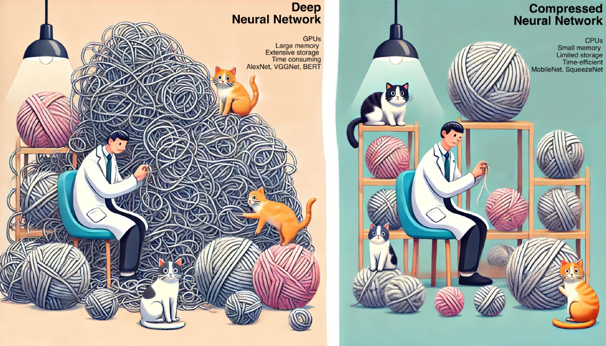
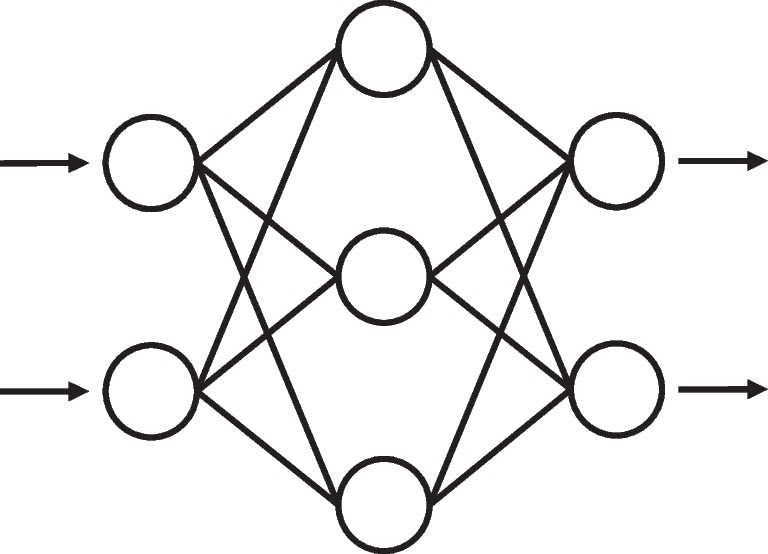
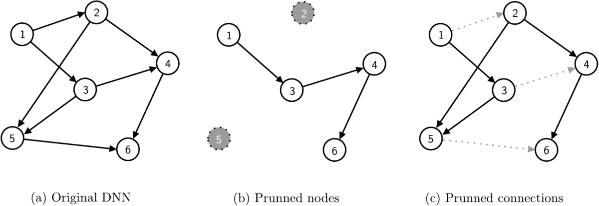

A comprehensive review of model compression techniques in machine learning
Abstract
Abstract
This paper critically examines model compression techniques within the machine learning (ML) domain, emphasizing their role in enhancing model efficiency for deployment in resource-constrained environments, such as mobile devices, edge computing, and Internet of Things (IoT) systems. By systematically exploring compression techniques and lightweight design architectures, it is provided a comprehensive understanding of their operational contexts and effectiveness. The synthesis of these strategies reveals a dynamic interplay between model performance and computational demand, highlighting the balance required for optimal application. As machine learning (ML) models grow increasingly complex and data-intensive, the demand for computational resources and memory has surged accordingly. This escalation presents significant challenges for the deployment of artificial intelligence (AI) systems in real-world applications, particularly where hardware capabilities are limited. Therefore, model compression techniques are not merely advantageous but essential for ensuring that these models can be utilized across various domains, maintaining high performance without prohibitive resource requirements. Furthermore, this review underscores the importance of model compression in sustainable artificial intelligence (AI) development. The introduction of hybrid methods, which combine multiple compression techniques, promises to deliver superior performance and efficiency. Additionally, the development of intelligent frameworks capable of selecting the most appropriate compression strategy based on specific application needs is crucial for advancing the field. The practical examples and engineering applications discussed demonstrate the real-world impact of these techniques. By optimizing the balance between model complexity and computational efficiency, model compression ensures that the advancements in AI technology remain sustainable and widely applicable. This comprehensive review thus contributes to the academic discourse and guides innovative solutions for efficient and responsible machine learning practices, paving the way for future advancements in the field.
Graphical abstract

查看已保存高清图（单独打开，可放大）1 Introduction
1.1 Background and significance of machine learning (ML) and deep learning (DL)
The evolution of ML and deep learning (DL) has been punctuated by a series of landmark models and technologies, each representing a significant leap in the field. The perceptron, developed in 1958 [1], laid the early groundwork for deep neural networks (DNNs) in pattern recognition. In the 1990s, support vector machines (SVMs) [2] gained prominence for their ability to handle high-dimensional data in classification and regression tasks. Long short-term memory (LSTM) [3], introduced in 1997, became essential for sequential data processing in language modeling and speech recognition. LeNet-5Footnote 1, introduced in 1998 [4], was one of the first convolutional neural network (CNN), pioneering digit recognition and setting the stage for future CNN developments. In the early 2000s, ensemble methods such as random forest emerged [5, 6], enhancing the capabilities of classification and regression. Deep belief network (DBN), unveiled in 2006 [7], reignited interest in DNNs, ushering in the modern era of DL. A major milestone was achieved with the advent of AlexNet in 2012 [8], a DNN that dominated the ImageNet challenge and brought DL into the AI spotlight. The development of generative adversarial networks (GANs) in 2014 [9] introduced a novel generative modeling approach, impacting unsupervised learning and image generation. The introduction of the transformer model in 2017 [10], and subsequently bidirectional encoder representations from transformers (BERT) in 2018 [11], revolutionized natural language processing (NLP), setting new performance benchmarks and highlighting the significance of context in language understanding. These milestones not only mark critical points in AI but also showcase the diverse methodologies and increasing sophistication in ML and DL.
Numerous practical advantages have been offered by DL, revolutionizing various fields. One of the primary benefits is its ability to automatically extract features from raw data, significantly reducing the need for manual feature engineering. This capability is particularly impactful in domains with complex data structures, such as image and speech recognition, where traditional methods struggle to achieve high accuracy [7, 8]. In healthcare, DL models are used for analyzing medical images to detect diseases like cancer, providing early and accurate diagnoses that are crucial for effective treatment [8]. For instance, CNNs have been successfully applied to mammography images to identify breast cancer with higher precision than traditional methods [8]. In industrial applications, DL enhances quality control processes by detecting defects in products on assembly lines, thus improving efficiency and reducing waste. Additionally, in the automotive industry, DL is a cornerstone of autonomous driving technology, enabling vehicles to interpret and respond to their environment in real-time. Beyond these specialized applications, DL also impacts the daily lives of citizens through various consumer technologies. Mobile phone applications, such as virtual assistants (e.g., Siri, Google Assistant), rely on DL to understand and process natural language commands, providing users with convenient and hands-free interaction with their devices [12]. Furthermore, facial recognition technology, powered by DL, is used for secure authentication in smartphones, enhancing both security and user experience [12]. Personalized recommendations on platforms like Netflix, Amazon, and Spotify also utilize DL algorithms to analyze user behavior and preferences, delivering tailored content and improving user satisfaction [13]. These practical examples highlight how DL not only pushes the boundaries of AI but also provides significant improvements and solutions to real-world problems across various sectors, making everyday life more efficient and convenient.
The expanding frontiers of ML and DL expose a paradoxical combination of advancement and limitation. [14, 15]. The exponential growth in training compute for large-scale ML and DL models since the early 2010s marks a significant evolution in computational technology [16]. Surpassing the traditional bounds of Moore’s law, training compute has doubled approximately every six months, introducing the large-scale era around late 2015 [17]. This era, marked by the need for 10 to 100 times more compute power for ML models, has significantly increased the demand for computational resources and expertise in advanced ML systems [14,15,16, 18]. One of the most noted manifestations of this growth is the expansion of the largest dense models in DL. Since the 2020s, these models have expanded from one hundred million parameters to over one hundred billion, primarily due to advancements in system technology, including model parallelism, pipeline parallelism, and zero redundancy optimizer (ZeRO) optimization techniques [17]. These changes made it possible to train larger and better models, which has changed how we handle ML. As computational capabilities continue to expand, the increase in graphics processing unit (GPU) memory, from 16 GB to 80 GB, struggles to keep pace with the exponential growth in the computational demands of ML models [14]. This gap tests the limits of current hardware and magnifies the importance of more efficient utilization of available resources. The integration of ML with high-performance computing (HPC), or high-performance data analytics (HPDA), has been pivotal in this context, enabling faster ML algorithms and facilitating the resolution of more complex problems [14, 16, 18]. Advanced techniques like DeepSpeed [15] and ZeRO-Infinity [17] further demonstrate how innovative system optimizations can push the boundaries of DL model training.
Nevertheless, the continued increase in model size and complexity underscores the need for model optimization [19,20,21,22,23]. Compressing ML models emerges as a vital approach, reducing the disparity between escalating computational demands and inadequate memory expansion by adjusting models to be compressed without significantly affecting performance. This approach encompasses several techniques, quantization, and knowledge distillation [24,25,26,27,28,29]. Model compression not only addresses the challenge of deploying AI systems in resource-constrained environments, such as mobile devices and embedded systems, but also improves the efficiency and speed of these models, making them more accessible and scalable. For instance, in mobile applications, compressed models enable faster inference times and lower power consumption, which are critical for enhancing user experience and extending battery life. Additionally, in edge computing scenarios, where computational resources are limited, compressed models facilitate real-time data processing and decision-making, enabling a wide range of applications from smart home devices to autonomous drones. In essence, model compression becomes not just a beneficial strategy, but a necessity for the practical deployment of AI systems, particularly in environments where resources are inherently limited. By optimizing the balance between model complexity and computational efficiency, model compression ensures that the advancements in AI technology remain sustainable and widely applicable across various domains and industries [24,25,26,27,28,29].
In conclusion, the rapid advancement in training compute for DL models marks a remarkable era of technological progress, juxtaposed with significant challenges. The stark contrast between the exponential demands of these models and the more modest growth in GPU memory capacity underscores a pivotal issue in the field of ML. It is this imbalance that necessitates innovative approaches like model compression and system optimization. As we proceed, this paper will delve deeper into these challenges, exploring the intricacies of model compression techniques and their critical role in optimizing large-scale ML and DL models. We will examine how these techniques not only address the limitations of current hardware but also open new avenues for efficient, practical deployment of AI systems in various real-world scenarios.
1.2 Main contributions and novelty
This paper makes significant contributions to the field of model compression techniques in ML, focusing on their applicability and effectiveness in resource-constrained environments such as mobile devices, edge computing, and internet of things (IoT) systems. The main contributions of this paper are as follows:
1. Comprehensive review of model compression techniques: we provide an in-depth review of various model compression strategies, including pruning, quantization, low-rank factorization, knowledge distillation, transfer learning, and lightweight design architectures. This review not only covers the theoretical underpinnings of these techniques but also evaluates their practical implementations and effectiveness in different operational contexts.
2. Highlighting the balance between performance and computational demand: our synthesis reveals the dynamic interplay between model performance and computational requirements. We emphasize the necessity for a balanced approach that optimizes both aspects, crucial for the sustainable development of AI.
3. Identification of research gaps: by examining the current state of model compression research, we identify critical gaps, highlighting the need for more research on integrating digital twins, physics-informed residual networks (PIResNet), advanced data-driven methods like gated recurrent units for better predictive maintenance of industrial components, predictive maintenance using DL in smart manufacturing, and reinforcement learning (RL) in supply chain optimization.
4. Future research directions: the paper advocates for future studies to focus on hybrid compression methods that combine multiple techniques for enhanced efficiency. Additionally, we suggest the development of autonomous selection frameworks that can intelligently choose the most suitable compression strategy based on the specific requirements of the application.
5. Practical examples and applications: to bridge the gap between theory and practice, we provide practical examples and case studies demonstrating the application of model compression techniques in real-world scenarios. These examples illustrate how model compression can lead to significant improvements in computational efficiency without compromising model accuracy.
6. Innovative solutions for efficient ML: we propose innovative solutions for improving the efficiency and effectiveness of ML models in resource-constrained environments. This includes the development of lightweight model architectures and the integration of advanced compression techniques to facilitate the deployment of ML models in practical, real-world applications.
The novelty of this paper lies in its approach to understanding and advancing model compression techniques. By synthesizing existing knowledge and identifying critical research gaps, we provide a comprehensive roadmap for future research in this domain. Our focus on practical applications and innovative solutions further enhances the relevance and impact of this work, making it a valuable resource for both researchers and practitioners in the field of ML.
1.3 Emerging areas and research gaps
The existing literature provides a comprehensive overview of various model compression techniques and their applications across different domains. However, there is a noticeable gap in addressing the specific challenges and advancements in many ML applications. Key areas where further research is necessary and emerging areas that leverage the latest developments in ML and model compression techniques to enhance performance, efficiency, and reliability include:
1. Digital twin-driven intelligent systems: digital twins, virtual replicas of physical systems, offer significant potential for real-time monitoring and predictive maintenance. Current research lacks a thorough exploration of how digital twins can be integrated with advanced ML models. Integrating model compression techniques can further enhance their efficiency by reducing the computational burden during real-time monitoring [30,31,32,33].
2. PIResNet: traditional ML models have been extensively studied, but the incorporation of physical laws into these models, such as in PIResNet, remains underexplored. This approach can enhance model accuracy and reliability by embedding domain-specific knowledge. Applying model compression techniques can optimize PIResNet for deployment in resource-constrained environments without sacrificing diagnostic accuracy [34,35,36].
3. Gated recurrent units (GRU): there is a need for innovative data-driven approaches that leverage multi-scale fused features and advanced recurrent units, like GRUs. Existing studies often focus on conventional methods, missing the potential benefits of these sophisticated techniques. Incorporating model compression techniques can further enhance the applicability of these approaches by reducing memory and computational requirements [37,38,39,40].
4. Predictive maintenance using DL in smart manufacturing: predictive maintenance involves using ML models to predict equipment failures before they occur, allowing for timely maintenance and reducing downtime. Current research gaps include optimizing DL models for deployment in smart factories by integrating them with IoT devices for continuous monitoring and real-time analysis. Applying model compression techniques can make these models more efficient for real-time data processing [41, 42].
5. RL in supply chain optimization: RL algorithms learn optimal policies through interactions with the environment, making them well-suited for dynamic and complex systems like supply chains. Current research gaps include optimizing various aspects such as inventory management, demand forecasting, and logistics by simulating different scenarios and learning from outcomes. To make RL models more feasible for real-time application in supply chain operations, model compression techniques can be utilized to reduce the model’s complexity and enhance operational efficiency, facilitating faster decision-making processes [43,44,45].
1.4 Material and methods
A systematic literature search was conducted across several databases, including IEEE Xplore [46], ScienceDirect [47], and Google Scholar [48]. Keywords related to model compression techniques such as pruning, quantization, knowledge distillation, transfer learning, and lightweight model design were used. The search was limited to papers published in the last decade to ensure relevance and innovation in the fields of ML and AI, including classical papers. Studies were included based on the following criteria: detailed discussion on model compression techniques; empirical evaluation of compression methods on ML models; availability of performance metrics like compression ratio, speedup, and accuracy retention; and relevant real-world applications. Exclusion criteria involved: papers not in English, reviews without original research, and studies focusing solely on theoretical aspects without empirical validation.
Data extracted from the selected studies included author names, publication year, compression technique evaluated, model used, datasets, performance metrics (e.g., compression ratio, inference speedup, accuracy), and key findings. A thematic synthesis approach was used to categorize the compression techniques and summarize their effectiveness across different applications and model architectures. The synthesis involved comparing and contrasting the effectiveness of different model compression techniques, highlighting their advantages and limitations. The impact of these techniques on computational efficiency, model size reduction, and performance metrics was analyzed to identify trends and potential areas for future research.
1.5 Paper organization
The structure of this paper has been systematically designed to guide the reader through a comprehensive exploration of model compression techniques in ML. The sections are organized as follows:
Section 1. Introduction: the significance of model compression in enhancing the efficiency of ML models, especially in resource-constrained environments, is introduced. An overview of the main contributions and the novelty of this paper is provided.
Section 2. Challenges in machine learning (ML) and deep learning (DL): the historical context and evolution of ML and DL are discussed, highlighting key milestones and the exponential growth in computational demands.
Section 3. Common model compression approaches: key model compression techniques such as pruning, quantization, low-rank factorization, knowledge distillation, and transfer learning are delved into. Detailed explorations of each technique, including theoretical foundations, practical implementation considerations, and their impact on model performance, are provided.
Section 4. Lightweight model design and synergy with model compression techniques: an overview of lightweight model architectures, such as SqueezeNet, MobileNet, and EfficientNet, is presented. The design principles and the synergy with model compression techniques to achieve enhanced efficiency and performance are discussed.
Section 5. Performance evaluation criteria: the criteria for evaluating the performance of compressed models, including metrics like compression ratio, speed-up rate, and robustness metrics, are discussed. The importance of balancing model performance with computational demand is emphasized.
Section 6. Model compression in various domains: recent innovations in model compression are highlighted, and case studies demonstrating the application of these techniques in various domains are presented. The significant improvements in computational efficiency achieved by compressed models without compromising performance are illustrated.
Section 7. Innovations in model compression and performance enhancement: The applications of model compression techniques across various fields are explored, demonstrating their implementation in real-world scenarios such as mobile devices, edge computing, IoT systems, autonomous vehicles, and healthcare. Specific examples illustrate the practical benefits and challenges of deploying compressed models in these environments.
Section 8. Challenges, strategies, and future directions: future research directions in model compression are outlined. Potential advancements and innovations that could enhance the efficiency and applicability of model compression techniques are discussed, including hybrid methods and autonomous selection frameworks. This section aims to inspire further research to address existing gaps.
Section 9. Discussion: the findings from the comprehensive review of model compression techniques are synthesized. The implications for future research and practical applications are evaluated, research gaps are identified, and future directions are suggested.
Section 10. Conclusion: the paper concludes with an exploration of recent innovations in model compression and performance enhancement. The ongoing advancements in the field and the potential for future research to optimize ML models are underscored.
Appendix A. Comprehensive summary of the references used in this paper: summary of references used in this paper, categorized by their specific application areas. This table provides a comprehensive overview of the key publications that have been referenced throughout the study, offering insights into the foundational and recent advancements in each area.
This organization ensures a logical progression from introducing the importance of model compression to exploring specific techniques, discussing their applications, and concluding with future research directions. The structure provides a clear roadmap for readers, facilitating a deeper understanding of the topic.
2 Challenges in machine learning (ML) and deep learning (DL)
2.1 Computational demands vs. computational memory growth
A model serves as a mathematical construct that represents a system or process. This construct is primarily used for the purpose of prediction or decision-making based on the analysis of input data. Typically, DL models are DNNs, which consist of numerous interconnected nodes or neurons. These nodes collectively process incoming data to produce output predictions or decisions, as depicted in Fig. 1. DL models can be implemented using a variety of programming frameworks, including TensorFlow [49] and PyTorch [50].
The training process of these models involves the use of substantial datasets, aiming to refine their predictive accuracy and enhance their generalization capabilities across unseen data. The training of a DL model is a critical process where large volumes of data are employed to iteratively adjust the model’s internal parameters, such as weights and biases. This adjustment process, known as backpropagation, involves the computation of the gradient of the loss function - a measure of model error - relative to the network’s parameters. The optimization of these parameters is executed through algorithms like stochastic gradient descent (SGD), aiming to minimize the loss function and thereby improve the model’s performance. Various programming environments, such as TensorFlow and PyTorch, provide sophisticated application programming interface (API) that support the development and training of complex DNN architectures. These environments also offer access to a range of pre-trained models, which can be directly applied or further fine-tuned for tasks in diverse domains, including image recognition, NLP, and beyond.

查看已保存高清图（单独打开，可放大）2.2 Model size and complexity
Model compression in DL is a technique aimed at reducing the size of a model without significantly compromising its predictive accuracy. This process is vital in the context of deploying DL models on resource-constrained devices, such as mobile phones or IoT devices. By compressing a model, it becomes feasible to utilize advanced DL capabilities in environments where computational power and storage are limited.
The performance of a DL model is fundamentally its ability to make accurate predictions or decisions when confronted with new, unseen data. This performance is quantitatively measured through various metrics, including accuracy, precision, recall, F1-score, and area under the curve of receiver operating characteristic (AUC-ROC). The selection of these metrics is contingent upon the specific nature of the problem being addressed and the type of model in use, ensuring a comprehensive evaluation of the model’s effectiveness in real-world applications.
| Technique | Compression Ratio | Performance Retention | Computing Efficiency | Key Strength | Drawbacks |
|---|---|---|---|---|---|
| Pruning | Reduces overhead effectively | Risk of over-pruning | |||
| Quantization | Increases speed | Errors can impact performance | |||
| Low-rank factorization | Efficient in redundancy reduction | Limited in non-redundant models | |||
| Knowledge distillation | Smaller models perform well | Possible performance gap | |||
| Transfer Learning | Saves resources, improves performance | Risk of negative transfer |
We have conducted a comprehensive analysis that delineates the performance retention, model size reduction, and other critical dimensions across different compression techniques. This comparison elucidates the nuanced distinctions between the methods, counteracting the impression that all techniques yield similar outcomes in performance maintenance and size reduction. In Table 1 is encapsulated the comparative analysis of these methods, addressing the strengths and drawbacks of each. This table provides a nuanced view of how each model compression method balances between model size reduction and performance retention, along with their computational efficiency and application suitability. This comparison should clarify the unique attributes and trade-offs of each model compression technique, offering a more refined understanding of their individual and comparative impacts [51,52,53,54,55].
In Table 2 is presented an overview of model compression approaches applied across various ML application domains. It summarizes the most suitable techniques for specific fields, such as image and speech analysis, highlighting the benefits and limitations of each approach. This comprehensive comparison aims to illustrate the effectiveness of pruning, quantization, low-rank factorization, knowledge distillation, and transfer learning in reducing model size, retaining performance, and enhancing computational efficiency.
| Application Domain | P | Q | L | K | T | Rationale |
|---|---|---|---|---|---|---|
| Image classification [53, 56,57,58] | \blacksquare | \blacksquare | \square | \square | \square | Efficient for reducing model size and speeding up inference, leveraging redundancy in CNNs without major accuracy loss. |
| Speech recognition [59,60,61,62] | \blacksquare | \square | \square | \blacksquare | \square | Enhances real-time processing; knowledge distillation simplifies complex models for edge deployment. |
| NLP [63,64,65] | \square | \square | \blacksquare | \blacksquare | \square | Manages large matrix operations efficiently, crucial for maintaining performance in translation and sentiment analysis. |
| Real-time applications [66, 67] | \square | \blacksquare | \square | \blacksquare | \square | Minimizes latency and resource use on constrained devices, essential for immediate responses. |
| Domain-specific tasks [68,69,70] | \square | \square | \square | \blacksquare | \blacksquare | Adapts pre-trained models to new environments efficiently, optimizing for performance and efficiency. |
| Model deployment on edge devices [67, 71, 72] | \blacksquare | \blacksquare | \square | \blacksquare | \square | Balances model complexity and deployment feasibility on devices with limited resources. |
| Autonomous vehicles [73,74,75,76] | \blacksquare | \blacksquare | \square | \blacksquare | \square | Benefits from reduced model sizes and faster inference times for real-time decision-making. |
| Augmented/virtual reality [77,78,79] | \square | \blacksquare | \square | \blacksquare | \square | Ensures high-speed processing for immersive experiences through efficient computation and reduced model sizes. |
| Recommender systems [62, 80, 81] | \blacksquare | \square | \blacksquare | \square | \square | Efficiently captures essential information from vast amounts of sparse data, enhancing speed and performance. |
| Medical image analysis [82,83,84,85] | \blacksquare | \square | \square | \square | \blacksquare | Quickly adapts existing models to specific medical tasks and optimizes them for efficient analysis without sacrificing accuracy. |
| IoT applications [70, 86,87,88] | \square | \blacksquare | \blacksquare | \square | \square | Produces lightweight models enabling smarter, real-time analytics at the edge with stringent power and computational constraints. |
2.3 Resource allocation and efficiency
Balancing model performance with computational demand is a critical consideration in the development and deployment of ML models, especially in resource-constrained environments such as mobile devices, edge computing, and IoT systems. This balance ensures that models are not only accurate but also efficient enough to be deployed in real-world applications.
Achieving this balance involves making trade-offs between the size, speed, and accuracy of the models. Techniques such as pruning, quantization, low-rank factorization, and knowledge distillation are pivotal in this regard. For instance, pruning reduces the number of parameters by eliminating less significant ones, which can decrease computational requirements while maintaining performance [89, 90]. Quantization further enhances efficiency by reducing the precision of model parameters, thereby decreasing memory usage and accelerating computation [23, 25]. Low-rank factorization decomposes large weight matrices into smaller matrices, which can capture essential information with fewer parameters [91, 92]. Knowledge distillation involves training a smaller model to replicate the behavior of a larger, well-trained model, effectively transferring knowledge while reducing computational complexity [93, 94]. This technique is particularly useful for deploying models in environments with limited resources without significantly sacrificing accuracy.
For instance, lightweight models like MobileNet and SqueezeNet are designed to operate efficiently on mobile devices, with MobileNet using depthwise separable convolutions to reduce computational load while maintaining accuracy [95], and SqueezeNet achieving AlexNet-level accuracy with significantly fewer parameters through the use of fire modules [96]. In edge computing scenarios, models must balance performance with the limited computational capacity of edge devices, utilizing techniques such as quantization and pruning to ensure real-time inference without excessive latency [97]. For IoT applications, model compression is crucial for deploying intelligent analytics on devices with stringent power and memory constraints, with techniques like low-rank factorization and knowledge distillation creating compact models that can operate efficiently in such environments [86].
In conclusion, the interplay between model performance and computational demand is a dynamic challenge that necessitates a balanced approach. By leveraging various model compression techniques, it is possible to develop efficient models that are suitable for deployment in a variety of resource-constrained environments, thus advancing the practical application of AI technologies.
3 Common model compression approaches
This section delves into key model compression techniques in DNNs. Each technique addresses the challenge of deploying advanced DNNs in scenarios with limited computational power, such as mobile devices and edge computing platforms, highlighting the trade-offs between model size reduction and performance retention. This exploration underlines the importance of innovative approaches to model compression, essential for the practical application of DNNs across various domains. Readers are guided through a detailed exploration of model compression techniques in DNNs, especially in scenarios where resources are constrained. Each technique is explained, encompassing theoretical foundations, practical implementation considerations, and their direct impact on model performance, including accuracy, inference speed, and memory utilization.
Pruning systematically removes less significant parameters from a DNN to reduce size and computational complexity while maintaining performance. Quantization reduces the precision of model parameters to lower-bit representations, decreasing memory usage and speeding up computation, which is ideal for constrained devices. Low-rank factorization decomposes large weight matrices into smaller, low-rank matrices, capturing essential information and reducing model size and computational demands. Knowledge distillation transfers knowledge from a larger, well-trained teacher model to a smaller student model, retaining high accuracy with fewer parameters. Transfer learning leverages pre-trained models on extensive datasets to adapt to new tasks, minimizing the need for extensive data collection and training. Lightweight design architectures, such as SqueezeNet and MobileNet, are engineered with fewer parameters and lower computational requirements without significantly compromising accuracy. Collectively, these techniques address the challenge of deploying advanced ML models in resource-constrained environments, balancing model performance with computational demand, and highlighting their importance in efficient and sustainable AI development.
3.1 Pruning
Pruning is a process for enhancing ML model efficiency and effectiveness. By systematically removing less significant parameters of a DNN, pruning reduces the model’s size and computational complexity without substantially compromising its performance [19,20,21,22, 98, 99]. This practice is especially vital in contexts where storage and computational resources are limited. In Fig. 2 it is depicted one illustration of pruned DNN.
Pruning involves the selective removal of network parameters (weights and neurons) that contribute the least to the network’s output [100]. This process leads to a compressed and efficient model, facilitating faster inference times and reduced energy consumption [101]. The common types of pruning includes neuron pruning, which involves removing entire neurons or filters from the network [102]. It is commonly used in CNNs and targets neurons that contribute less to the network’s ability to model the problem. By removing these neurons, the network’s complexity is reduced, potentially leading to faster inference times [59]. Weight pruning, focused on eliminating individual weights within a DNN [103], involves identifying weights with minimal impact (typically those with the smallest absolute values) and setting them to zero. This process creates a sparse weight matrix, which can significantly reduce the model’s size and computational requirements [104]. Structured pruning focuses on removing larger structural components of a network, such as entire layers or channels [105]. It is aligned with hardware constraints and optimizes for computational efficiency and regular memory access patterns.
The parameters of DNN are selected based on their impact on the output. Techniques like sensitivity analysis or heuristics are often used to identify these parameters [106]. Various algorithms, like magnitude-based pruning or gradient-based approaches, are employed to determine and execute the removal of parameters. These methods frequently involve iteratively pruning and testing the network to find an optimal balance between size and performance [107]. After pruning, it’s essential to evaluate the pruned model’s performance to ensure that accuracy or other performance metrics are not significantly compromised [108]. Re-training or fine-tuning the pruned network is typically required to recover any loss in accuracy [56]. Post-pruning, it is crucial to validate the model on a relevant dataset to ensure that its accuracy and efficiency meet the required standards [109].
Pruning is emphasized as a vital technique for removing excess in oversized models [90, 110]. Although, the main challenge arises from over-pruning, which can result in the loss of crucial information, adversely affecting the model’s performance [90, 110]. Researchers have argued for the necessity of optimized DNN approaches that meticulously avoid the negative consequences of over-pruning [111, 112]. The conversation extends to the impact of over-pruning on cloud-edge collaborative inference, with suggestions for a more conservative approach to network pruning to maintain model effectiveness [97, 113]. This reflects a consensus on the need to preserve essential information while streamlining models for efficiency. Moreover, the optimization challenges of pruning a distributed CNN for IoT performance enhancement are illustrated through a case study, emphasizing the complexity of achieving optimal pruning without compromising model integrity [114]. These discussions collectively underscore the importance of research focusing on developing pruning methodologies that reduce model size and computational demands and safeguard against the loss of essential information.
Pruning allows for the creation of more efficient and compressed ML models. While it involves a trade-off between model size and performance, with careful implementation, it can significantly enhance computational efficiency. Ongoing research in this field continues to refine and develop new pruning techniques, making it a dynamic and essential aspect of DNN optimization.

查看已保存高清图（单独打开，可放大）3.2 Quantization
Quantization serves as a pivotal technique for model compression, playing a key role in enhancing computational efficiency and reducing storage requirements [23,24,25,26,27, 69]. This process is particularly critical in deploying DNN models on devices with limited resources. For example, most modern DNN are made up of billions of parameters, and the smallest large language model (LLM) has 7B parameters [115]. If every parameter is 32 bit, then it is needed 112Gbit just to store the parameter on disk. This implies that large models are not readily accessible on a conventional computer or on an edge device. Quantization refers to the process of reducing the precision of the DNN’s parameters (weights and activations), simplifying the model, leading to decreased memory usage and faster computation, without significantly compromising model performance. Quantization aims to reduce the total number of bits required to represent each parameter, usually converting floating-point numbers into integers [116].
Uniform quantization involves mapping input values to equally spaced levels. It typically converts floating-point representations into lower-bit representations, like 8-bit integers. Uniform quantization simplifies computations and reduces model size, but it must be carefully managed to avoid significant loss in model accuracy [117]. Non-uniform quantization uses unevenly spaced levels, which are often optimized for the specific distribution of the data. Techniques like logarithmic or exponential scaling are used to allocate more levels where the data is denser. Non-uniform quantization can be more efficient in representing complex data distributions, potentially leading to better preservation of model accuracy [118]. Post-training quantization involves applying quantization to a model after it has been fully trained. It simplifies the process as it doesn’t require retraining; however, it may require calibration on a subset of the dataset to maintain accuracy [119].
Selecting the right parameters (like weights and activations) to quantize is crucial. The selection is based on their impact on output and the potential for computational savings. Techniques include linear quantization, which maintains a linear relationship between the quantized and original values, and non-linear quantization, which can better adapt to data distribution [70]. These methods often require additional consideration to ensure minimal impact on the model’s performance. It is crucial to assess the post-quantification to ensure that there is no significant loss in accuracy or efficiency. In some cases, fine-tuning the quantized model can help regain any lost accuracy. Methods include retraining the model with a lower learning rate or using techniques like knowledge distillation [120]. It is important to check if the model works well with a specific set of data to make sure it is accurate and fast [121]. Quantization effectively compresses DNN models, enabling their deployment in resource-constrained environments. It helps make DNN simpler and faster by reducing the number of computational requirements [122]. Advancements in quantization methods continue to focus on maintaining model performance while maximizing compression [71].
Quantization plays a significant role in model size reduction and inference speed, suitable for mobile and edge computing and real-time applications [121, 123,124,125]. Despite its benefits, it carries the risk of introducing quantization errors that can significantly impair model accuracy, especially in complex DL models [121, 123]. This concern is well-documented in the literature, with several studies addressing the impact of quantization on model accuracy and proposing various methods to mitigate these effects. For instance, research has highlighted the effectiveness of higher-bits integer quantization, thereby achieving a balance between reduced model size and maintained accuracy [126]. Additionally, the risks associated with quantization errors have been explicitly discussed, emphasizing the negative impact these errors can pose on model accuracy [127]. Moreover, the development of methodologies such as sharpness- and quantization-aware training (SQuAT) has been shown to mitigate the challenges of quantization and enhance model performance [128]. These studies collectively underscore the critical need for continued innovation in quantization techniques, aiming to minimize the adverse effects of quantization errors while leveraging the efficiency gains offered by this approach in the field of DL.
3.3 Low-rank factorization
Low-rank factorization is a way to make NN smaller and simpler without making it less effective. This method focuses on decomposing large, dense weight matrices found in DNN into two smaller, lower-rank matrices [28, 29, 129]. The essence of low-rank factorization is its ability to combine these two resulting data matrices to approximate the original, thereby achieving compression. This method reduces the model size and data processing demands, making CNN more suitable for applications in resource-limited environments [91]. This process aims to capture the most significant information in the network’s weights, allowing for a more compact representation with minimal loss in performance.
Matrix decomposition and tensor decomposition are common applied techniques. Matrix decomposition in low-rank factorization involves breaking down large weight matrices into simpler matrix forms. Single value decomposition (SVD) is a common method, where a matrix is decomposed into three smaller matrices, capturing the essential features of the original matrix. This reduces the number of parameters in DNN models, leading to less storage and computational requirements, while striving to maintain model performance [130]. Extending beyond matrix decomposition, tensor decomposition deals with multidimensional arrays (tensors) in DNNs. Techniques like canonical polyadic decomposition (CPD) or tucker decomposition are used, which factorize a tensor into a set of smaller tensors [131]. Tensor decomposition is particularly effective for compressing CNNs, often achieving higher compression rates compared to matrix decomposition.
Layers with larger weight matrices or those contributing less to the output variance are prime candidates for factorization. Techniques like sensitivity analysis can help identify these layers [132]. The model’s accuracy and dimension need to be assessed after the factorization process. Metrics like accuracy, inference time, and model size are key considerations. Fine-tuning the factorized network can help recover any loss in accuracy due to the compression [133]. This might involve continued training with a reduced learning rate or applying techniques like knowledge distillation. It is recommended to validate the factorized model on a relevant dataset to ensure that it still meets the required performance standards.
Low-rank factorization efficiently reduces redundancies in models, particularly in fully connected layers [28, 29, 134]. Low-rank factorization faces challenges in its broad applicability, despite its effectiveness in reducing redundancies in large-scale models. Its suitability is somewhat limited to scenarios with significant redundant information in fully connected layers, indicating a constraint in its versatility across different types of models [28, 29]. For instance, the effectiveness of approaches like Kronecker tensor decomposition in compressing weight matrices and reducing the parameter dimension in CNN highlights the potential of low-rank factorization techniques in specific contexts [135]. However, the literature indicates that the applicability of low-rank factorization may be somewhat constrained, reflecting limitations, especially in models with varying architectural complexities or those not characterized by significant redundancy in their fully connected layers [136, 137]. Such challenges underscore the necessity for ongoing research to expand the scope and efficacy of low-rank factorization methods, potentially through approaches that can be applicable to a broader spectrum of DL architectures without compromising model performance or efficiency.
Low-rank factorization is an effective approach for compressing DNNs, particularly useful in environments with limited computational resources. The compromise between model size and precision is inevitable, but an optimization can mitigate the impact of performance dips. Ongoing research in this area continues to explore more efficient factorization techniques and their applications in various types of NNs [138].
3.4 Knowledge distillation
Knowledge distillation is primarily utilized in the domain of DNNs for model compression and optimization [63, 93, 94, 105]. It works by transferring experience from a large-scale model (teacher) to a smaller-scale model (student), enhancing the latter’s performance without the computational intensity of the former [139]. At its core, knowledge distillation is about extracting the informative aspects of a large model’s behavior and instilling this knowledge into a smaller model. This approach allows for the retention of high accuracy in the student model while significantly reducing its size and complexity.
In a teacher-student model framework, a large-scale, well-trained model is employed to guide the implementation of a smaller-scale model. The large-scale network provides guidance to the small-scale network [116]. The small-scale model aims to mimic the large-scale model’s output while having fewer parameters and computational complexity. The small-scale model is optimized to infer the correct categorization, and also to replicate the large-scale model’s output (predictions or intermediate features). The small-scale model can be trained to match the softmax output of the large-scale model, or to match its feature representations. There are common loss functions that measure how closely the small-scale outputs match the large-scale outputs [140]. Distillation loss, for example, helps the small-scale model to learn the behavior of the large-scale model, going beyond mere categorical inferring. Knowledge distillation is especially effective at simplifying models’ complexity, making it suited for applications in limited-resource systems. The small-scale model’s performance is similar to the large-scale model, but it requires fewer computational resources.
While it may seem that the overall performance of small-scale models would decrease compared to large-scale models, the primary goal of knowledge distillation is not to achieve identical performance across all tasks but rather to maintain similar performance on specific tasks while reducing model size and computational complexity. However, these large models often come with significant computational costs and memory requirements, making them impractical for deployment in resource-constrained environments or real-time applications. By distilling the knowledge from a large-scale model into a smaller counterpart, the goal is to retain the essential information and decision-making capabilities necessary for specific tasks while reducing the model’s size and computational demands. While it is true that small-scale models may not match the performance of large-scale models across all tasks, the focus is on achieving comparable performance on targeted tasks of interest while benefiting from the efficiency and speed advantages of smaller models. The aim is not to replicate the exact performance of the large model but to strike a balance between model size, computational efficiency, and task-specific performance, making knowledge distillation a valuable technique for model compression and optimization in practical applications.
Distillation techniques can significantly enhance the performance of smaller models, often outperforming models trained in standard ways [141]. Knowledge distillation has been successfully adopted in areas like computational vision, NLP, and speech recognition, demonstrating its versatility and effectiveness. The choice of large and small-scale models is crucial. Too complex a teacher can make the distillation process less effective. The architecture of the large and small-scale models also has a significant impact on the distillation process’s success. Tuning hyperparameters such as temperature in softmax and the weight of distillation loss is vital for achieving optimal performance in the student model [142].
Knowledge distillation, well-known for its capacity to encapsulate the functionalities of larger models into forms that are suited to deployment in resource-restricted settings, faces a series of intricate challenges and drawbacks. A notable issue is the deployment of extensive pre-trained language models (PLM) on devices with limited memory, which necessitates a delicate balance to optimize performance without overwhelming system resources [143]. Furthermore, the generalization capacity of distilled models may be compromised when utilizing public datasets that differ from the training datasets, diluting the model’s relevance and accuracy [144]. The constraints of existing knowledge distillation-based approaches in federated learning underscore the need for innovative solutions to address the scarcity of cross-lingual alignments for knowledge transfer and the potential for unreliable temporal knowledge discrepancies [145, 146]. Additionally, the sparsity, randomness, and varying density of point cloud data in light detection and ranging (LiDAR) semantic segmentation present challenges that can yield inferior results when traditional distillation approaches are directly applied [147]. These challenges highlight the necessity for continuous exploration and refinement of knowledge distillation techniques to ensure they can effectively reduce model size and complexity while maintaining or even enhancing performance across a broad spectrum of applications.
Knowledge distillation stands as a powerful tool in the realm of CNN, offering an efficient way to compress models and enhance the performance of smaller networks. As the demand for deploying sophisticated models in resource-limited environments grows, knowledge distillation will continue going in a fundamental area of knowledge and development, paving the way for more efficient and accessible AI applications [148].
3.5 Transfer learning
Transfer learning is a technioque in the DNN’s domain that enables models to leverage pre-existing knowledge for new, often related tasks. This methodology significantly reduces the need for extensive data collection and training from scratch. In essence, transfer learning involves taking a model established for one purpose and repurposing it for a different but related task. The assumption behind this strategy is that the knowledge gained by a model in learning one task can be beneficial in learning another, especially when the tasks are similar [149,150,151,152,153,154,155].
In the feature extractor approach, a model employed on a large dataset is applied as a fixed feature extractor. The pre-training layers encompass common capabilities that are applicable to a diverse set of tasks. Common in image and speech recognition tasks, this method is beneficial when there’s limited training data for the new task [156]. It allows for leveraging complex features learned by the model without extensive retraining. Fine-tuning involves adjusting a pre-conditioned model by continuing the learning process on a different dataset. This approach often involves modifying the model design in order to better suit the upcoming task, and then training these layers (or the entire model) on the new data. Fine-tuning can lead to more tailored and accurate models for specific tasks.
Transfer learning drastically reduces the time and resources required to develop effective models, as the initial learning phase is bypassed. Models can achieve higher accuracy, especially in tasks where training data is scarce, by building upon pre-learned patterns and features [157]. Transfer learning has seen successful applications in areas like medical image analysis [158], NLP [159], and autonomous vehicles [160], showcasing its versatility. The selection of the preconditioned model should reflect the nature of the upcoming task. Factors like the similarity of the datasets and the complexity of the model need consideration. Careful adjustment of the model is required to avoid overfitting to the new task or underfitting due to insufficient training. Regularization techniques and data augmentation can be helpful in this regard [161].
Transfer learning is not without its challenges and drawbacks. One such challenge is the need for large and diverse datasets to effectively train models, coupled with the limited interpretability of DL models [162]. In the context of face recognition with masks, the reduction in visible features due to masks poses a significant challenge to maintaining model performance, highlighting the complexity of adapting transfer learning to new and evolving scenarios [163]. Furthermore, the application of transfer learning in breast cancer classification underscores the technique’s dependency on domain-specific data to achieve state-of-the-art (SOTA) performance, suggesting limitations in its versatility across different domains [164]. Moreover, scenarios with limited resources emphasize the need for optimized transfer learning models [165]. The selection of appropriate transfer learning algorithms for practical applications in industrial scenarios presents another layer of complexity, underscoring the challenge of applying transfer learning to varied real-world applications [166]. Additionally, hypothesis transfer learning in binary classification highlights the balance required between leveraging existing knowledge and adapting to new tasks, further complicating the deployment of transfer learning in applications reliant on big data [167]. These references collectively underscore some challenges associated with transfer learning, from dataset and interpretability issues to computational constraints and the risk of negative transfer, highlighting the need for research and development to expand it across more comprehensive applications.
Transfer learning represents a significant leap in training DNNs, offering a practical and efficient pathway to model development and deployment. It accelerates the training process and opens up possibilities for tasks with limited data availability. As AI continues to evolve, transfer learning is poised to play an increasingly vital role [168].
4 Lightweight model design and synergy with model compression techniques
The quest for efficient and effective NN architectures is paramount. Two critical approaches emerge in this pursuit: lightweight model design and model compression. Both methodologies aim to enhance the ease of deployment and performance of DNN, especially in resource-constrained environments [57, 169]. This section delves into the concept of lightweight model design, exemplified by groundbreaking architectures, and draws connections to model compression, illustrating how these strategies collectively drive advancements in the ML domain.
Lightweight model design focuses on constructing DNN from the ground up, with an emphasis on minimalism and efficiency. This approach often involves innovating architectural elements, such as the fire modules in SqueezeNet and the low-rank separable convolutions in SqueezeNext, to reduce the model’s scale and computational needs without significantly compromising its performance. The objective is to create inherently efficient models that can operate effectively on devices with reduced computational capacity and memory, such as smartphones, IoT appliances, and embedded systems [169]. However, model optimization methodologies are applied to pre-existing, often more complex, DNN models. The goal is to make these post-training models smaller and easier to use in limited resource settings. These methods are used to make networks smaller-scale. They balance keeping the network efficient with reducing its size [170].
4.1 Overview of lightweight model architectures
4.1.1 SqueezeNet architecture
SqueezeNet represents a significant advancement in designing NN models [96, 171]. Developed with an emphasis on minimizing model size without compromising accuracy, SqueezeNet stands as an example of lightweight model design in ML.
At the heart of SqueezeNet is the use of fire modules, which are small, carefully designed CNN that drastically reduce the number of parameters without affecting performance [21, 172]. This design aligns with the growing need for deployable DL models in limited-resource applications, such as smartphones and embedded systems. The compact nature of SqueezeNet also offers significant benefits in terms of reduced memory requirements and faster computational speeds, making it ideal for real-time applications [96]. SqueezeNet’s architecture has also been influential in the realm of model compression. Its highly efficient design makes it an excellent baseline for applying further compression techniques. These methods enhance SqueezeNet’s ease of deployment, particularly in scenarios where computational resources are limited. The adaptability of SqueezeNet to various compression techniques exemplifies its versatility and robustness as a DL model [89].
The application of SqueezeNet extends beyond theoretical research, finding practical use in areas including media analysis and mobile applications. Its influence has also paved the way for future research in lightweight NN design, inspiring the development of subsequent architectures like MobileNet and SqueezeNext. These models build on the foundational principles established by SqueezeNet, further pushing the boundaries of efficiency in NN design [95, 173].
4.1.2 SqueezeNext architecture
SqueezeNext is an advanced CNN architecture lightweight model [173]. Building upon the principles of SqueezeNet, SqueezeNext integrates novel design elements to achieve even greater efficiency in model size and computation. SqueezeNext stands out for its innovative architectural choices, which include low-rank separable convolutions and optimized layer configurations. These features enable it to maintain high accuracy while drastically reducing the model’s size and computational demands. This efficiency is particularly beneficial for deployment in environments with stringent memory and processing constraints, such as mobile devices and edge computing platforms. The design of SqueezeNext demonstrates the progress made in crafting models that are both lightweight and capable [173].
SqueezeNext’s design also contributes significantly to the field of model compression. Its inherent efficiency provides one foundation for applying additional compression techniques. These methods further enhance the model’s suitability for deployment in resource-limited settings, showcasing SqueezeNext’s versatility in various application scenarios. The architecture serves as a benchmark in the study of model compression, providing insights into achieving an optimal balance between model size, speed, and accuracy [21]. The impact of SqueezeNext extends to practical applications in areas like image processing, real-time analytics, and IoT devices.
4.1.3 MobileNetV1 architecture
MobileNetV1, introduced by researchers at Google, marks a significant milestone in the development of efficient DL architectures [95]. It is specifically engineered for mobile and embedded vision applications, offering a perfect blend of compactness, speed, and accuracy. The core innovation of MobileNetV1 lies in its use of depth-wise separable convolutions. This design reduces the computational cost and model size compared to conventional CNNs. Depthwise separable convolutions split the standard convolution into two layers - a depthwise convolution and a pointwise convolution - which substantially decreases the number of parameters and operations required. This architectural choice makes MobileNetV1 exceptionally suited for mobile devices, where computational resources and power are limited [21, 95].
MobileNetV1’s efficient design has significantly impacted the deployment of DL models on mobile and edge devices. Its ability to deliver high performance with low latency and power consumption has enabled a wide range of applications, from real-time image and video processing to complex ML tasks on handheld devices. This breakthrough has opened up new possibilities in the field of mobile computing, where the demand for powerful yet efficient AI models is constantly growing [174].
MobileNetV1 not only stands as a remarkable achievement in its own right, but also lays the groundwork for future advancements in lightweight DL models. It has inspired a series of subsequent architectures, like MobileNetV2 and MobileNetV3, each iterating on the initial design to achieve even greater efficiency and performance. The principles established by MobileNetV1 continue to influence the design of NN aimed at edge computing and IoT devices [175].
4.1.4 MobileNetV2 architecture
MobileNetV2, an evolution of its predecessor MobileNetV1, further refines the concept of efficient NN design for mobile and edge devices. Introduced by Google researchers, MobileNetV2 incorporates novel architectural features to enhance performance and efficiency, making it a standout choice in the landscape of lightweight DL models [174]. MobileNetV2 introduces the concept of inverted residuals and linear bottlenecks, which are key to its improved efficiency and accuracy. These innovations involve using lightweight, depth-wise separable convolutions to filter features in the intermediate expansion layer, and then projecting them back to a low-dimensional space. This approach reduces the computational burden and preserves important information flowing through the network. The result is a model that offers higher accuracy and efficiency, particularly in applications where latency and power consumption are critical considerations [174].
MobileNetV2’s enhanced efficiency has significant implications for mobile and edge computing. Its ability to deliver high-performance ML with minimal resource usage has broadened the scope of applications possible on mobile devices. This includes advanced image and video processing tasks, real-time object detection, and augmented/virtual reality (AR/VR) - all on devices with limited computational capabilities. MobileNetV2’s architecture has set a new benchmark for developing AI models that are both powerful and resource-efficient [175]. Its architectural innovations have been foundational in the creation of more advanced models like MobileNetV3 and beyond, which continue to push the boundaries of efficiency and performance in NN design. The legacy of MobileNetV2 is evident in the ongoing efforts to optimize DL models for the increasingly diverse requirements of mobile and edge AI [176].
4.1.5 MobileNetV3 architecture
MobileNetV3 represents a further refinement in the development of efficient and compact DL models tailored for mobile and edge devices. Developed by Google, MobileNetV3 builds upon the foundations laid by its predecessors, MobileNetV1 and MobileNetV2, incorporating several novel architectural innovations to enhance performance while maintaining efficiency [177]. One of the key innovations in MobileNetV3 is the use of a neural architecture search (NAS) to optimize the network structure. This automated design process identifies the most efficient network configurations, balancing the trade-offs between latency, accuracy, and computational cost. Additionally, MobileNetV3 introduces squeeze-and-excitation modules, which adaptively recalibrate channel-wise feature responses by explicitly modeling interdependencies between channels. This improves the model’s representational power without a significant increase in computational burden [177].
MobileNetV3 also incorporates a combination of hard swish (h-swish) activation functions and new efficient building blocks, such as the MobileNetV3 blocks, which include lightweight depthwise convolutions and linear bottleneck structures. These architectural features collectively reduce the computational load and enhance the model’s performance on mobile and edge devices [177]. The efficiency and high performance of MobileNetV3 make it particularly suitable for real-time applications, such as image classification, object detection, and other vision-related tasks on resource-constrained devices. Its compact design ensures low latency and reduced power consumption, enabling deployment in diverse environments, from smartphones to IoT devices [177].
The principles and techniques introduced in MobileNetV3 have been adopted and extended in various new architectures, further advancing the SOTA in lightweight and efficient model design. These developments continue to push the boundaries of what is achievable in the context of mobile and edge AI applications, ensuring that high-performance DL models remain accessible and practical for real-world use [178, 179].
4.1.6 ShuffleNetV1 architecture
ShuffleNetV1 marks a significant advancement in the field of efficient NN architectures. Developed to cater to the increasing demand for computational efficiency in mobile and edge computing, ShuffleNetV1 introduces an innovative approach to designing lightweight DL models. The defining feature of ShuffleNetV1 is its use of pointwise group convolutions and channel shuffle operations. These techniques dramatically reduce computational costs while maintaining model accuracy. Point-wise group convolutions divide the input channels into groups, reducing the number of parameters and computations. The channel shuffle operation then allows for the cross-group information flow, ensuring that the grouped convolutions do not weaken the network’s representational capabilities. This unique combination of features enables ShuffleNetV1 to offer a highly efficient network architecture, particularly suitable for scenarios where computational resources are limited [180].
ShuffleNetV1’s efficiency and high performance make it a valuable asset in mobile and edge computing applications. Its design addresses the challenges of running complex DL models on devices with constrained processing power and memory, such as smartphones and IoT devices. The architecture has been widely adopted for tasks like real-time image classification and object detection, offering a practical solution for deploying advanced AI capabilities in resource-limited environments [181].
The introduction of ShuffleNetV1 has had a significant impact on the research and development of efficient NN models. Its approach to reducing computational demands without compromising accuracy has contributed to subsequent architectures, including ShuffleNetV2. These developments continue to explore and expand the opportunities of what is possible in the realm of lightweight and efficient DL models [180].
4.1.7 ShuffleNetV2 architecture
ShuffleNetV2 represents a progression in the evolution of efficient NN architectures, building upon the foundations laid by its predecessor, ShuffleNetV1. The ShuffleNetV2 architecture was specifically designed to address the limitations and challenges observed in previous lightweight models, particularly in the context of computational efficiency and practical deployment on mobile and edge devices. By introducing a series of novel design principles and techniques, ShuffleNetV2 achieves a superior balance between speed and accuracy, making it highly effective for real-world applications [181].
The core innovation of ShuffleNetV2 lies in its strategy to optimize the network’s computational graph through a more refined use of channel operations. Unlike its predecessor, ShuffleNetV2 focuses on addressing the issues of memory access cost and network fragmentation. The architecture introduces an enhanced channel split operation, where each layer’s input is split into two branches: one that undergoes a pointwise convolution and another that remains unchanged, significantly reducing the computation and memory footprint. Additionally, ShuffleNetV2 employs an improved channel shuffle operation that ensures an even and efficient mixing of information across feature maps, thereby enhancing the network’s representational power without introducing substantial computational overhead [181]. ShuffleNetV2 outperforms its predecessor and other contemporary lightweight models in terms of speed and accuracy on various benchmarks. It achieves a favorable trade-off between model size and computational efficiency, making it particularly well-suited for deployment in scenarios with stringent resource constraints, such as mobile and edge AI applications [181].
The impact of ShuffleNetV2 extends beyond its immediate performance benefits. Its introduction has influenced the broader field of efficient NN design, inspiring subsequent research and development efforts aimed at further optimizing lightweight architectures. By addressing the critical bottlenecks in mobile and edge AI deployment, ShuffleNetV2 has set a new standard for what is achievable in terms of balancing efficiency and accuracy in DL models. This has paved the way for more sophisticated applications in real-time image processing, object detection, and other AI-driven tasks, ensuring that high-performance DL remains accessible and practical for a wide range of real-world uses [181].
4.1.8 EfficientNet architecture
EfficientNet, a groundbreaking series of CNN, represents a significant advancement in the efficient scaling of DL models. Developed with a focus on balanced scaling of network dimensions, EfficientNet has set new standards for achieving SOTA accuracy with remarkably efficient resource utilization. The key innovation of EfficientNet is its systematic approach to scaling, called compound scaling. Unlike traditional methods that independently scale network dimensions (depth, width, or resolution), EfficientNet uses a compound coefficient to uniformly scale these dimensions in a principled manner. This balanced scaling method allows EfficientNet to achieve higher accuracy without an exponential increase in computational complexity. The network efficiently utilizes resources, making it highly effective for both high-end and resource-constrained environments [176].
EfficientNet’s performance sets a benchmark for various ML challenges, especially in image classification tasks. The network’s ability to scale efficiently across different computational budgets makes it adaptable for a wide range of applications, from mobile devices to cloud-based servers. EfficientNet has demonstrated superior performance in tasks requiring high accuracy and efficiency, such as object detection, image segmentation, and transfer learning across different domains [176]. Its principles have been adopted and adapted in subsequent research, pushing the limits of what is possible in terms of efficiency and performance in NNs [182, 183].
4.1.9 EfficientNetV2 architecture
EfficientNetV2 represents a significant advancement in the field of efficient DL models, building upon the success of the original EfficientNet architecture. Developed by researchers at Google, EfficientNetV2 introduces several novel techniques to further enhance performance and efficiency, making it one of the leading models for mobile and edge device applications [184].
EfficientNetV2 incorporates a new scaling method called progressive learning, which adjusts the size of the model during training to improve both accuracy and efficiency. This technique begins training with smaller resolutions and simpler augmentations, progressively increasing the resolution and complexity as training progresses. This method not only speeds up the training process but also helps the model achieve higher accuracy. Another key innovation in EfficientNetV2 is the use of fused convolutional blocks, which combine the efficiency of depthwise convolutions with the accuracy benefits of regular convolutions. These blocks help reduce the overall computational cost while maintaining high performance. Additionally, EfficientNetV2 employs various training-aware optimizations, such as improved data augmentations and regularization techniques, which contribute to its superior performance [184].
The architecture of EfficientNetV2 is designed to be versatile, performing well across a wide range of tasks, including image classification, object detection, and segmentation. Its balanced approach to scaling and optimization allows it to deliver SOTA accuracy with significantly reduced computational resources, making it ideal for deployment in environments with limited processing power and memory, such as mobile devices and IoT platforms [184]. EfficientNetV2 has set new benchmarks in the field of DL, influencing subsequent research and inspiring new directions in the development of efficient NN models. The principles and techniques introduced in EfficientNetV2 have been adopted and further refined in various other architectures, pushing the boundaries of what is possible in efficient model design for real-world applications [185].
4.1.10 Overview of lightweight model architectures
Some of the key lightweight model architectures are summarized in the Table 3, with their year of launch, key features, and impact on various applications highlighted.
| Architecture | Year | Key Features | Impact and Applications |
|---|---|---|---|
| SqueezeNet | 2016 | Fire modules to reduce parameters, compact design, efficient for low-resource devices | Significant model size reduction, used in smartphones and embedded systems, baseline for further compression techniques, practical in media analysis and mobile applications. |
| SqueezeNext | 2018 | Low-rank separable convolutions, optimized layers, enhanced efficiency | Greater model size and computation efficiency, useful in mobile devices and edge computing, benchmark for model compression. |
| MobileNetV1 | 2017 | Depth-wise separable convolutions to reduce computational cost | Suitable for mobile and edge devices, real-time image and video processing, inspired subsequent architectures like MobileNetV2 and V3. |
| MobileNetV2 | 2018 | Inverted residuals, linear bottlenecks, depth-wise separable convolutions | Higher efficiency and accuracy, broadened scope for mobile applications, influenced further research in efficient NN design. |
| MobileNetV3 | 2019 | NAS for optimal network structure, squeeze-and-excitation modules, h-swish activation | Enhanced performance for mobile devices, low latency and power consumption, influenced new architectures in efficient model design. |
| ShuffleNetV1 | 2018 | Pointwise group convolutions, channel shuffle operations | Highly efficient for mobile and edge computing, practical for real-time image classification and object detection. |
| ShuffleNetV2 | 2018 | Optimized channel operations, enhanced channel split and shuffle operations | Superior speed and accuracy, well-suited for resource-constrained environments, set new standards for lightweight NN design. |
| EfficientNet | 2019 | Compound scaling to balance network dimensions | SOTA accuracy with efficient resource utilization, adaptable for mobile to cloud applications, influenced model scaling techniques. |
| EfficientNetV2 | 2021 | Progressive learning, fused convolutional blocks, training-aware optimizations | Improved training efficiency and accuracy, versatile for various tasks, set benchmarks in DL, influencing new efficient architectures. |
4.2 Integration with compression techniques
The concept of lightweight design focuses on architecturally optimizing DNNs to minimize their demand on computational resources without significantly undermining their efficacy. Innovations such as efficient convolutional layers [95, 174], introduce structural efficiencies that lower the parameter count and computational load. These innovations are crucial for enabling the deployment of high-performing DNNs on devices with limited computational capacity, like smartphones and IoT devices. The fusion of lightweight design and model compression in DNNs represents a crucial advancement for deploying advanced ML models under computational and resource constraints [186,187,188].
The synergy between lightweight model design and model compression represents a comprehensive approach to optimizing CNN. While the former approach is proactive, building efficiency into the model’s architecture, the latter is reactive, refining and streamlining models that have already been developed. Together, they address the diverse challenges in deploying advanced ML models, from the initial design phase through to post-training optimization [170]. This section will explore how SqueezeNet, SqueezeNext, and similar architectures embody the principles of lightweight design and how their integration with model compression techniques exemplifies the broader strategy of NN optimization in ML.
Lightweight model design and model compression, though related, represent distinct approaches in DL. Lightweight model design focuses on creating architectures that are inherently optimized for performance and low resource consumption, while maintaining satisfactory accuracy. This involves techniques like employing smaller convolutional filters and depthwise separable convolutions to reduce the number of parameters and computational intensity of each layer [189]. In contrast, model compression is the process of downsizing an existing model to diminish its size and computational demands without significantly compromising accuracy. The objective here is to adapt a pre-trained model for more efficient deployment on specific hardware platforms [190]. Both methods aim to produce models that are well-suited for deployment on devices with limited resources. The following subsections highlight some prominent lightweight models designed to have fewer parameters and lower computational requirements compared to traditional DNNs [191, 192].
Recent studies have contributed to the field by proposing novel approaches [69, 193, 194], exploring various compression techniques for DNNs, including compact models, tensor decomposition [131, 195], data quantization [122, 196], and network sparsification [197, 198]. These methods are instrumental in the design of NN accelerators, facilitating the deployment of efficient ML models on constrained devices. A noteworthy application in video coding [199] suggested a lightweight model achieving up to 6.4% average bit reduction compared to high efficiency video coding (HEVC), showcasing the potential of architecturally optimized DNNs in real-world applications. Additionally, it a novel and lightweight model for efficient traffic classification [200] was developed, utilizing thin modules and multi-head attention to significantly reduce parameter count and running time, demonstrating the practical utility of lightweight designs in enhancing running efficiency. A pruning algorithm to decrease the computational cost and improve the accuracy of action recognition in CNNs [201] reduces the model size and also decreases overfitting, leading to enhanced performance on large-scale datasets. Finally, a hardware/software co-design approach for a NN accelerator focuses on model compression and efficient execution [202]. A two-phase filter pruning framework was proposed for model compression, optimizing the execution of DNNs. This co-design approach exemplifies how integration of hardware and software can enhance the performance and efficiency of DNNs in practical applications.
4.2.1 Combined impact on performance and efficiency
Innovative techniques, such as pruning depthwise separable convolution networks [203], highlight the potential for improving speed and maintaining accuracy, emphasizing the importance of structural efficiency in lightweight design. Meanwhile, the work on adaptive tensor-train decomposition [204] showcases the significant reduction in parameters and computation, further underscoring the advancements in model compactness and efficiency for mobile devices. Cyclic sparsely connected (CSC) architectures suggests structurally sparse architectures for both fully connected and convolutional layers in CNNs [205]. Unlike traditional pruning methods that require indexing, CSC architectures are designed to be inherently sparse, reducing memory and computation complexity to . The number N denotes the number of connections presents in a layer. This technique demonstrates an innovative way to achieve model compactness and computational efficiency without the overhead associated with conventional sparsity methods. An efficient evolutionary algorithm was introduced for NAS [206]. This method enhances the search efficiency for task-specific NN models, illustrating how evolutionary strategies can automate the design of efficient and effective CNN architectures for various tasks. These examples collectively underscore the diverse and innovative strategies being explored to make DNNs more efficient and adaptable, reflecting the ongoing commitment within the research community to push the boundaries of what is possible in ML efficiency.
The combinations of model compression techniques and their impacts on model performance reveals a complex landscape. Integrating various model compression techniques to avoid compromising the original model’s effectiveness is a well-acknowledged challenge in the field [207, 208]. Combining different compression methods can indeed lead to increased efficiency. However, it presents the challenge of balancing improvements in memory usage and computational efficiency against the potential for accuracy reduction and the introduction of noise. This variability underscores the need for application-specific evaluation and adaptation [56, 60]. Moreover, the complexity of optimizing these methods for specific applications highlights an ongoing research area, necessitating innovation to address factors like fairness and bias and to explore hardware advancements for further enhancement. This includes developing strategies that can effectively leverage the strengths of each compression approach while mitigating their drawbacks, ensuring that the resulting models are efficient and suitable for deployment in limited-resource settings and capable of performing near the standard’s set [123, 209].
4.2.2 Synergies between model compression and explainable artificial intelligence (XAI)
When discussing model compression, it is crucial to also consider the role of explainable artificial intelligence (XAI) as a complementary tool in the process [210, 211]. XAI provides insights into how ML models make decisions, which is particularly beneficial during the compression process. By understanding which parts of the model are most important for making accurate predictions, developers can make more informed decisions about which components to prune or quantize. This targeted approach can help maintain the model’s performance while reducing its size. Furthermore, can help identify potential biases or errors introduced during compression, ensuring that the compressed model remains robust and reliable [212,213,214]. Integrating XAI with model compression techniques not only enhances the interpretability of the compressed models but also aids in fine-tuning the balance between model size and performance. This synergy is essential for developing efficient, scalable, and trustworthy AI systems capable of operating effectively in diverse and resource-limited environments.
In looking towards future directions for the advancement of CNN, a multidisciplinary approach emerges across various domains. The potential of automated ML (AutoML) [215] elucidates how it can streamline model optimization by simplifying the search for efficient architectures, thus making the model design process easier. Meanwhile, the imperative of energy efficiency takes center stage [216], who pushes for greener practices in CNN development, and encourages for the adoption of energy-efficient models to mitigate environmental impact.
The exploration of lightweight design and model compression techniques underscores a significant stride in optimizing DNN architectures for efficient deployment on devices with constrained resources. Lightweight design approaches proactively embed efficiency into the model’s architecture, while model compression methods reactively refine existing models to reduce their size and computational demands. This dual strategy addresses the diverse challenges encountered from the initial design phase to post-training optimization. The integration of these techniques exemplifies a comprehensive approach to NN optimization, balancing performance and resource efficiency. Studies have demonstrated the practical utility of these approaches in various applications, including video coding, traffic classification, and action recognition, highlighting their impact on enhancing model performance and efficiency. The ongoing research and innovations in this field continue to push the boundaries of what is achievable in ML efficiency, ensuring that advanced models can be effectively deployed in real-world scenarios with limited computational capacity.
5 Performance evaluation criteria
This section delves into the methodologies and metrics used to assess the efficacy of model compression techniques. Key aspects of performance evaluation, such as accuracy, model size, computational speed, and energy efficiency, are discussed. The trade-offs between maintaining high accuracy and achieving significant compression rates are explored, highlighting the challenges and breakthroughs in this domain. Additionally, this section discusses the practical implications of model compression in real-world applications, emphasizing the need for robust and efficient models that can operate under computational constraints.
5.1 Compression ratio
The compression ratio can be determined by calculating the fraction between the original and compressed model’s size [21, 90]. Consider that the original model size is 100 MB and the compressed model size is 10 MB, then the compression ratio would be 10:1 (100:10). Secondly, it can be expressed as a proportion of the total amount of parameters in the original model and the simplified model [217], as the following expression:
where a is the amount of parameters in the initial model M and is the number of parameters in the simplified model . The compression ratio of over M is the proportion of the total number of parameters in M to the total number of parameters in . In addition, a commonly used benchmark is the index space-saving , defined as:
where is the defined space-saving rate.
5.2 Speed up rate
The speed-up rate focuses on quantifying how much faster a compressed model performs compared to the original model. It provides a clear measurement of the reduction in computational time achieved by compression.
To calculate the speed-up rate, we compare the inference time of the original model with that of the compressed model [217]. For example, if the original model takes 10 s to perform inference and the compressed model takes 3 s, the speed-up achieved is 10:3. The speed-up rate is defined as:
where is the running time of the original model , and is the running time of the compressed model .
Most studies use the average training duration per epoch or the average testing duration to measure running time. The speed-up rate is a crucial metric for understanding the efficiency gains from model compression, especially as smaller-scale models typically result in faster computation for both training and testing stages, closely linked to the compression rate.
5.3 Inference latency
Inference latency measures the time required for a model to process an input and produce an output [217]. This metric is particularly important for applications requiring real-time processing, where minimizing delay is critical. While the speed-up rate focuses on the relative improvement in computational efficiency, inference latency measures the absolute time required for a model to process an input and produce an output. This distinction is crucial for applications that demand real-time processing, where minimizing delay is paramount. Inference latency is directly measured in time units (e.g., seconds, milliseconds) and is essential for ensuring real-time performance in applications such as autonomous driving, video processing, and interactive systems.
Reducing inference latency involves several techniques beyond model compression: model parallelism, which splits the model across multiple devices to reduce the time taken for each layer; data parallelism, which distributes input data across multiple devices to reduce batch processing time; weight sharing, which shares model parameters across multiple instances to minimize memory footprint and computation; and hardware acceleration, which utilizes specialized hardware like GPUs or tensor processing units (TPUs) to speed up inference computations.
5.4 Label loyalty
Label loyalty measures how closely a compressed model predicts the same labels as the original model. It is computed by comparing the quantity of the small-scale model’s predictions to the ground truth labels (the correct answers) and the predictions made by the large-scale model, where N is the total number of samples in the dataset being evaluated. The label loyalty score can be calculated as the percentage of instances where the compressed model predicts the same label as the original model [207].
5.5 Probability loyalty
Probability loyalty measures how closely the probability distribution of the compressed model matches that of the original model [207]. It is calculated using the Jensen-Shannon (JS) divergence relation between the predicted probability distributions of the compressed model and the original model. The JS divergence is a symmetric and finite distance-like metric that measures the difference between two probability distributions. The probability of a loyalty score can be calculated using the following expression:
where P and Q are the probability distributions of the original and compressed models, respectively, and M is the average of P and Q.
The formula for the probability of loyalty is provided:
where is the probability loyalty score, P is the predicted probability distribution of the original model, Q is the probability distribution of the compressed model, and is the JS divergence between P and Q.
5.6 Robustness
A model’s robustness can be measured using different metrics, depending on the types of perturbations the model is expected to be resistant to [217]. Some common metrics for calculating robustness include the following:
Adversarial accuracy: This measures how accurate the model is on inputs that have been deliberately changed to cause the model to misclassify them.
Robustness radius: This measures the maximum amount of perturbation that the model can tolerate while still correctly classifying an input.
Worst-case error: This measures the worst-case error of the model over a set of perturbations.
Sensitivity analysis: This measure measures the sensitivity of the model’s output to minor modifications in the input.
The specific method for calculating robustness will depend on the type of perturbation that the model is expected to be robust against and the specific application.
5.7 Computation reduction
To calculate computation reduction, it is needed to compare the quantity of operations required to perform inference on the original model and on the compressed model [217]. For example, if the original model requires 1000 operations to perform inference and the compressed model requires 100, then the computation reduction would be 10:1 (1000:100).
6 Model compression in various domains
This section delves into the cutting-edge advancements in model compression and performance optimization, highlighting various strategies such as pruning, quantization, knowledge distillation, and transfer learning. These techniques aim to reduce the model size and computational demands without significantly compromising accuracy, thereby enabling faster, more energy-efficient, and cost-effective ML solutions. Through detailed analysis and comparison of methods like SqueezeNet, model pruning, and innovative compression tactics, this discourse sheds light on the potential and challenges of optimizing DL models for real-world applications.
This section provides case studies detailing the performance of model compression techniques in different scenarios. Developing new techniques for compressed models is a challenging and important area of research that requires a careful balance between model complexity, accuracy, and practical considerations. Researchers need to address various challenges, including maintaining accuracy while compressing the model, optimizing performance in resource-constrained environments like mobile devices, and integrating compressed models effectively into real-world applications [96, 110, 113, 123, 208].
Furthermore, compressed models must overcome obstacles related to their configuration and hardware constraints. Current SOTA approaches often rely on well-designed CNN models, limiting flexibility in changing configurations for more complex tasks. Additionally, the extension of CNN to platforms, such as smartphone, robotic, or self-navigating vehicle platforms, is impacted by hardware bottlenecks. In the context of big data challenges, compressed models face issues related to prediction, data cleansing, dimensionality reduction, and other tasks. Researchers must develop outstanding models and optimization techniques, including parallel and decentralized methods, to effectively handle big data challenges.
6.1 Model compression in image classification
Pruning and quantization are widely recognized for their effectiveness in reducing the computational demands of DNNs without significantly compromising accuracy. A method proposed in one study utilizes both techniques to compress DNNs, enabling their deployment on embedded platforms for image classification tasks. This approach demonstrated that strategic model compression could retain performance levels while significantly reducing model size and computational requirements [56]. In real-time image processing, such as synthetic aperture radar (SAR) ship detection, the need for rapid inference and minimal model size is paramount. Research in this area has shown that model compression can maintain high accuracy in image classification tasks while substantially reducing model size and inference time. This balance is crucial for applications where timely processing of large image datasets is essential [57]. Studies have also explored the impact of model compression techniques on improving the efficiency of image classifiers on platforms with limited computational capabilities. By employing various compression strategies, researchers have been able to enhance the performance of image classification models, demonstrating the potential for efficient image analysis in resource-constrained environments [53]. Further research has focused on developing tailored compression techniques that not only reduce model size but also improve accuracy in image classification. These techniques are designed to optimize widely used models, demonstrating that model compression can lead to better efficiency and performance in image classification tasks [58].
In summary, model compression techniques such as pruning and quantization are instrumental in optimizing image classification models for various applications, including real-time image processing and efficient operation on resource-constrained devices. Tailored compression strategies further illustrate the potential to enhance both the efficiency and accuracy of these models, underlining the significance of model compression in the ongoing advancement of image classification technologies.
6.1.1 SqueezeNet
SqueezeNet, a CNN architecture [96], achieves AlexNet-level performance on the ImageNet database with 50 fewer parameters. The primary goal of the paper is to find a model with very few parameters that is still accurate. Smaller CNN architectures offer several advantages, such as more effective ML training, less processing time when deploying new models, and cost-effective field programmable gate array (FPGA) and embedded deployment.
SqueezeNet can reduce the size of a model by 5 times compared to AlexNet, but still does better than its top-1 and top-5 accuracy. When applying deep compression with 8-bit quantization, SqueezeNet results in 363 times smaller than 32-bit AlexNet with similar performance. Furthermore, applying compression with 6-bit quantization on SqueezeNet, it results in 510 times smaller than 32-bit AlexNet with similar performance.
For instance, it is observed that SqueezeNet achieves a 1.5 speed up over AlexNet on a central processing unit (CPU) and a 4 speed up on a GPU. Additionally, it uses less memory than AlexNet during inference, making it optimized for running resource-limited applications. Moreover, the developers of SqueezeNet have successfully implemented a hardware accelerator known as efficient inference engine (EIE), which can work directly on the compressed model, achieving significant acceleration and energy efficiency gains. This highlights the potential for model compression techniques not only to enhance accuracy and model size but also energy efficiency, which is critical for mobile and embedded devices.
6.1.2 Model pruning for image classification
In this case [110], a pruning scheme for remote optical image analysis is proposed that reduces the computational cost of CNNs, while maintaining high accuracy. The proposed pruning technique was compared to other pruning techniques. The article also aims to show that refinement of the pruned models can further improve their efficiency. The preliminary results indicated that the presented method achieves comparable or even greater performance than the original models while reducing the number of parameters and computation costs.
The presented technique was used on the UC Merced Image Dataset and 21 land-use scenes. Subsets of the images are divided for training, fine-tuning, validation, and testing. The models are trained using a batch size of 64, using SGD. The first learning rate is set to 0.001. The study’s outcome reveals that the proposed method achieves up to 50% floating-point operations per second (FLOPS) pruning ratio for visual geometry group (VGG)-16 and up to 47.62% FLOPS pruning ratio for residual neural network (ResNet)-50 while maintaining high accuracy. This indicates that the suggested technique can reduce the computational cost of these models by up to 50% while maintaining their accuracy. It also achieved an overall accuracy of 92.50% with a pruning ratio of 60%. The effectiveness of the proposed methodology is unaffected by the training rate, which means that the method is robust and can achieve high pruning ratios despite training data used. On the NWPU-RESISC45 dataset, the proposed method prunes up to 50.68% FLOPS for VGG-16 and up to 44.98% FLOPS for ResNet-50 while maintaining high accuracy. It also achieved an overall accuracy of 93.50% with a pruning ratio of 70%.
6.1.3 Compression based on pruning and quantification
In this case [123], it is proposed a novel DL model optimization technique focused on the use of filter-stripe combination pruning and data quantification. The proposed technique achieves a high compression ratio while maintaining model accuracy. The proposed technique is also suitable for mobile and embedded devices. The authors conducted experiments on two DL models, VGG-16 and ResNet-56, using the Canadian institute for advanced research (CIFAR)-10 dataset. They trained the original models to converge and then applied the proposed pruning and data quantification techniques to obtain a fully compressed model. The observations suggested that the proposed model performs better than existing DL compression techniques in terms of performance and compression percentage. The performance of the resized models is very similar to that of the original, while the compression ratio is significantly improved. The inference speed, memory utilization, and energy efficiency of the compressed models are also improved compared to the original models. Based on the research results from ResNet-56, this technique can minimize the number of parameters to 4:1 and the number of steps of computations to 5:1, and the loss of model performance is only 0.01%. On VGG-16, the quantity of parameters is reduced to 14:1, the quantity of computation is scaled down to 3:1 and the accuracy loss is 0.5%.
6.1.4 Facial expression recognition
In this case [218], the effects of model compression methods on the performance and fairness of facial expression recognition models are investigated. The research encompasses three compression tactics - pruning, weight clustering, and post-training quantization - and examines their combinations, specifically pruning with quantization and weight clustering with quantization. The findings indicate that model size can be substantially reduced through compression and quantization without sacrificing accuracy. However, these processes might negatively affect the fairness of the algorithms. Additionally, the study conducts a comparative analysis of the baseline models versus the compressed models and delves into three research questions concerning the efficacy and fairness of model compression methods.
The study used two datasets, extended extended Cohn-Kanade (CK+) and real-world affective faces database (RAF-DB). The assessment focused on three key aspects: model size, accuracy, and fairness. The study found that compression and quantization can significantly reduce model size without compromising accuracy, but may adversely affect algorithmic fairness. The baseline model reached an overall accuracy of 67.96% on the CK+ dataset, while the baseline RAF-DB classifier attained an overall test accuracy of 82.46%. The compressed MobileNetV2 model attained a higher accuracy compared to the model on the CK+ dataset, while the compressed ShuffleNetV2 model achieved a slightly lower accuracy than the full model. However, the study also found that model compression and quantization can adversely impact algorithmic fairness, particularly in terms of gender and race accuracy. The compressed models showed a larger discrepancy between male and female accuracy metrics compared to the full models, indicating potential algorithmic bias. Similarly, the compressed models showed a larger discrepancy between accuracy metrics for different race groups compared to the full models.
6.1.5 Detecting stress on a person’s health through 2D images
In this case [219], it is addressed the adverse effects of stress on health and its high prevalence in American society. It introduces a new algorithm leveraging ML techniques to detect stress from 2D electrocardiogram (ECG) images, bypassing the need for intricate feature extraction. Pruning, quantization, and knowledge distillation are identified as effective techniques for compressing the model.
The VGG-16 algorithm was optimized to enhance its learning rate and overall performance. Additionally, the efficacy of various other algorithms, including VGG-19, InceptionV3, ResNet-50, and DenseNet-169, in stress prediction was evaluated. The research methodology included leaveone-out cross-validation (LOOCV) and 10-fold cross-validation. Findings showed that frequency domain images exhibited greater complexity and variability compared to spatial images, which, despite their reduced variation, were simpler and more adaptable.
Through model pruning, the total trainable parameters were reduced from about 55 MM to less than 1 MM, which resulted in a processing time of 148 ms/step and accuracy of 86.25%. The computation cost was reduced by 4 times. Additionally, quantization was applied to lower the precision of the model’s weights and activations. This approach achieved a classification accuracy of 90.62% in the stress detection approach. Knowledge distillation outperformed others in terms of the balance between performance and processing power, attaining an accuracy of 88.75% with a loss of 0.0066 and a processing speed of 65 ms/step.
6.1.6 Model compression in medical image analysis
Research has explored the effects of image compression on the classification performance of DL models for medical images, such as mammograms. The findings indicate that model compression can be applied effectively in medical imaging without compromising the accuracy of diagnosis, which is paramount in clinical settings [82]. A novel approach to medical image compression involves the use of variational autoencoders combined with ResNet. This method addresses common issues in CNN training and aims to optimize the balance between image quality and compression rate, thus preserving the critical details necessary for accurate medical diagnosis [83, 220]. Further studies have introduced model compression techniques to enhance the efficiency of DNNs in medical image analysis. These techniques streamline the model architecture, reducing its complexity while maintaining diagnostic accuracy. Such advancements facilitate quicker and more resource-efficient analysis, which is essential for real-time medical decision-making [84]. In the context of medical imaging, transfer learning has been leveraged to adapt existing models to specific medical tasks efficiently. This approach allows for the optimization of models for precise diagnostic analysis without sacrificing accuracy, demonstrating the potential of model compression in enhancing the applicability and performance of DL in medical image recognition [85].
In conclusion, model compression in medical image analysis is a growing field that addresses the need for high-performing, efficient diagnostic tools in healthcare. Through techniques like image compression, variational autoencoding, efficiency optimization, and transfer learning, researchers are able to refine DL models to operate effectively in the demanding environment of medical diagnostics, ensuring that critical healthcare applications benefit from the advancements in AI and ML.
6.2 Model compression in speech recognition
In the context of speech recognition, a variety of model compression techniques have been employed to enhance processing efficiency. These include pruning, quantization, knowledge distillation, Low-rank factorization, and transfer learning. These methods aim to reduce model size and computational complexity while retaining the accuracy necessary for reliable speech recognition [59]. Lossy compression techniques, particularly for CNN-based GANs in speech recognition, have shown promise in reducing numerical precision and encoding, thus minimizing model size and computation requirements. Such approaches facilitate the deployment of efficient speech recognition systems that can operate effectively in real-time environments [60]. Further exploration of model compression in speech recognition has led to the development of methods that encompass pruning, quantization, knowledge distillation, low-rank factorization, and transfer learning. These comprehensive strategies are designed to enhance the performance of speech recognition models, ensuring high accuracy and efficiency on platforms with constrained computational capabilities [61]. Innovative methods like self-distillation have been introduced to improve model efficiency in speech recognition. This technique allows high-accuracy models to be obtained directly without the need for an assistive large-scale model, thus simplifying the training process and enhancing model performance. Self-distillation represents a significant advance in model compression, enabling the deployment of highly efficient speech recognition systems [62].
In conclusion, model compression has emerged as a crucial technology in the advancement of speech recognition systems, enabling the development of efficient and accurate models suitable for deployment on resource-constrained devices. Through techniques such as pruning, quantization, knowledge distillation, low-rank factorization, and self-distillation, researchers have been able to optimize speech recognition models to meet the demands of real-time processing and limited computational capacity.
6.3 Model compression in natural language processing (NLP)
In NLP, model compression encompasses a range of techniques including pruning, quantization, knowledge distillation, low-rank factorization, and transfer learning. These methods are employed to manage the extensive computational requirements of NLP models without significantly impacting their performance. A study discusses various model compression strategies in NLP, highlighting their effectiveness in maintaining high accuracy while reducing computational load [63]. Compression of word embeddings using low-rank matrix decomposition and knowledge distillation presents a significant advancement in NLP model efficiency. This approach not only reduces the size of the model but also retains the semantic richness of the embeddings, which is essential for tasks like translation and sentiment analysis. The technique demonstrates that it is possible to achieve substantial compression without compromising the quality of language representations [64]. The slow inference speed and high computational demands of pre-trained deep models, such as BERT, pose significant challenges in NLP. Knowledge distillation has been proposed as a solution to compress these models effectively, thereby enhancing their practicality for real-time applications. This method allows for the retention of essential language understanding capabilities while significantly reducing the model’s size and computational requirements [65].
In summary, model compression in NLP is a dynamic field that addresses the critical need for efficient and effective language processing models. Through various compression techniques, researchers have made significant strides in optimizing NLP models for improved deployment on devices with limited computational resources, ensuring that advanced language processing capabilities remain accessible and practical for a wide range of applications.
6.3.1 Compressing sparse pre-trained language models (PLM)
In this particular instance [110], a novel approach for implementing sparse PLM training is presented. The method uses weight pruning and knowledge distillation to create pre-trained models that can be used in downstream tasks with minimal accuracy loss. The method is applied to BERT-base, BERT-large and DistilBERT and fine-tuning the sparse models on downstream tasks such as Stanford question answering dataset (SQuAD) and the general language understanding evaluation (GLUE) benchmark. The results indicate that the compressed sparse pre-trained models achieve SOTA compression-to-accuracy ratios and can even be further compressed to 8-bit precision using quantization-aware training.
The experimental setup involved using the English Wikipedia dataset, which contains 2500 MM words. The data was divided into two groups: train (95%) and validation (5%) sets. The pre-trained models were evaluated on a range of benchmarks for transfer learning, including SQuAD and text classification tasks from the GLUE benchmark – multi-genre natural language inference (MNLI), Quora question pairs (QQP), question-answering natural language inference (QNLI) and Stanford sentiment treebank (SST-2).
The method worked better than others when trained at a higher level of sparsity. When comparing the presented approach to other approaches, it was found that it yielded superior results at 85 and 95% sparsity ratios, respectively. Also, the accuracy loss is less than 3% when you compare the compressed sparse models with their dense counterpart. It also demonstrated that it is possible to significantly compress the models using quantization-aware training in order to achieve SOTA results in terms of compression-to-accuracy ratio.
6.3.2 Knowledge distillation for bidirectional encoder representations from transformers (BERT)
In this case [221], a new approach called patient knowledge distillation for compressing large PLMs like BERT into equally effective lightweight models is proposed. It uses two patient distillation schemes to enable the exploitation of relevant information in the large-scale model’s hidden layers. It also boosts the small-scale model to gain knowledge from and mimic the large-scale through a multi-layer distillation process.
The research methodology focused on using the proposed method in relation to four different NLP tasks: sentiment analysis, paraphrase similarity correlation, NLP inferring, and machine reading understanding. The datasets used for each task were SST-2, QQP, MNLI, QNLI, Microsoft research paraphrase corpus (MRPC) and recognizing textual entailment (RTE). The research focused on comparing the effects of the suggested approach with standard knowledge distillation techniques. The preliminary findings suggest that the presented approach results in superior efficiency and better predictive power than the traditional knowledge distillation methodologies, with notable gains in training efficiency and space reduction, while still maintaining comparable model performance to the original model. The method achieved SOTA results on various benchmark data sources and reduced the number of required parameters by up to 90%.
The compressed models achieved up to 4.3 speed up in inference time and up to 4.7 reduction in model size while maintaining similar accuracy to the original model. In general, the tests and results show that using compression techniques can make LLM easier to use in real life by reducing the number of redundant parts. The authors concluded that the selection of hyperparameters had a critical effect on the performance of the approach, and that careful tuning was necessary to achieve optimal results.
6.4 Model compression in autonomous vehicles
In autonomous vehicle applications, real-time inference is essential for timely decision-making and response. A study introduced a compiler-aware neural pruning search framework, optimizing 2D and 3D object detection. This approach enabled real-time inference speeds with minimal accuracy loss on mobile devices, illustrating the effectiveness of model compression in maintaining performance while reducing computational demands [73]. Another critical aspect in autonomous vehicles is the optimization of energy consumption while adhering to real-time latency constraints. Research in this area has proposed strategies to achieve a balance between edge and cloud computing for autonomous systems, highlighting the importance of model compression in enhancing energy efficiency and reducing latency for real-time processing [74]. For For vehicle-to-vehicle communication (V2V), lightweight CNN designs inspired by MobileNet and enhanced through knowledge distillation have proven effective. These models facilitate automatic scenario recognition, demonstrating that compressed models can achieve high performance while being suitable for the stringent computational limitations of autonomous vehicles [75]. Addressing the challenge of limited communication bandwidth in connected vehicles, ternary quantization-based model compression methods have been explored. These methods aim to reduce the model parameter size, demonstrating that effective model compression can lead to more efficient data transmission and processing in the network of autonomous vehicles [76].
In conclusion, model compression in autonomous vehicles is essential for achieving the necessary balance between performance and computational efficiency. Through techniques like neural pruning, energy optimization, lightweight CNN designs, and quantization, researchers are able to develop advanced systems that meet the real-time, energy-efficient, and accurate processing requirements crucial for the safety and functionality of autonomous vehicles.
6.5 Model compression in recommender systems
Self-distillation techniques have been utilized to reduce model size and computational demands, which is particularly beneficial for recommender systems that must process large volumes of data swiftly to generate timely recommendations. Such approaches enable the creation of efficient and compact models that maintain or even improve recommendation quality [62]. The development of compressed frameworks for sequential recommender systems addresses the challenge of deploying these systems on resource-constrained devices. Research in this area has shown that it is possible to maintain or improve accuracy compared to uncompressed models, thus demonstrating the effectiveness of model compression in enhancing the scalability and responsiveness of recommender systems [80]. Matrix factorization algorithms, a core component of many recommender systems, have been optimized through model compression to improve efficiency, speed, and simplicity. These advancements allow recommender systems to deliver high-quality recommendations more efficiently, reducing the computational load and enabling smoother operation on platforms with limited processing power [81].
In summary, model compression in recommender systems is essential for handling the vast data volumes and real-time processing requirements inherent in personalized recommendation tasks. Through innovative techniques like self-distillation, compressed frameworks, and efficient matrix factorization, researchers are able to significantly improve the performance and efficiency of recommender systems, ensuring they can operate effectively even in resource-limited environments.
6.6 Model compression in Internet of Things (IoT) and non-application specific domains
In the IoT domain, model compression strategies are tailored to meet the unique requirements of resource-constrained devices. One study introduces a model compression approach in IoT that optimizes for low-end devices by combining quantization and pruning, significantly reducing computational demands and enabling efficient deployment [86]. Another study presents a CNN model compression framework tailored for intelligent inspection within power IoT systems, focusing on enhancing performance through pruning and quantization [87]. The demand for low-power solutions in IoT has led to the development of specialized accelerators for CNNs, aimed at improving inference capabilities on low-end devices. These solutions incorporate hybrid quantization schemes and binary activation functions, using SVM techniques to streamline model execution while conserving energy [88]. Beyond IoT-specific considerations, model compression addresses broader challenges across various domains. A significant concern is the computational and energy efficiency constraints faced by embedded general-purpose processors in handling advanced NN-based ML techniques. Research in this area highlights the importance of developing effective compression strategies, such as those combining pruning and quantization, to make CNN inferences more efficient on resource-constrained devices [70].
In summary, model compression in IoT and non-application-specific domains focuses on creating efficient, compact models suitable for deployment in environments with limited computational and energy resources. By implementing tailored compression techniques like pruning, quantization, and specialized accelerators, researchers are able to significantly improve the operational efficiency of models across a wide range of devices and platforms, demonstrating the versatility and necessity of model compression in the expanding landscape of smart devices and general-purpose computing.
6.6.1 Memory- communication-aware on Internet of Things (IoT)
In this case [208], is introduced a transfer learning model compression technique, called network of neural networks (NoNN) that yields higher performance than other baselines and similar accuracy as the associated large-scale model, while using less communication among small-scale models.
The experimental setup involved compressing various DNNs for five image classification tasks: CIFAR-10, CIFAR-100, Scene, caltech-UCSD birds (CUB), and Imagenet. The Scene and CUB datasets are related to the transfer learning domain, where a pre-trained NN is fine-tuned on a particular problem. Furthermore, the parameters in NoNN were compared to the parameters in knowledge distillation and attention-transfer with knowledge distillation (ATKD) standard models. Moreover, they indicate that they outperformed previously used models like Splitnet.
The results indicated that NoNN achieved close to large-scale model’s precision with significantly lower memory ( gain) and computation ( fewer FLOPSs). They also reported that NoNN demonstrated superior performance compared to other baselines, despite the lack of communication among small-scale models until the final layer. The proposed NoNN compresses a pre-trained large-scale model resulting in many disjoint and highly compressed small-scale modules, without loss of performance. This facilitates faster and more cost-effective computation on IoT devices.
For instance, NoNN boasts an overall accuracy of 91.5% on the CIFAR-10 sample, which is higher than the accuracy of many baselines such as MobileNet and ShuffleNet. NoNN also achieves an average inference speed of 0.5 ms per image, which is faster than various baselines such as MobileNet and ResNet-18. Additionally, NoNN achieves an average memory utilization of 430 kB per student, which is within the memory budget of most IoT devices. Finally, NoNN achieves an average energy efficiency of 0.5 mJ per image, which is lower than several baselines such as MobileNet and ResNet-18.
6.7 Summary of model compression applications
In Table 4 is provided a concise summary of how model compression techniques are applied across various vertical applications, highlighting the unique challenges and requirements in each case.
| Case study | Peculiarities of the considered vertical application |
|---|---|
| Image Classification | Effective in reducing computational demands while maintaining accuracy. Essential for real-time image processing and deployment on resource-constrained devices. Techniques like pruning and quantization are commonly used to reduce model size and latency without compromising performance. The balance between speed and accuracy is crucial for applications in mobile devices and embedded systems [53, 56,57,58]. |
| Speech Recognition | Focuses on reducing model size and computational complexity while retaining high accuracy for real-time processing. Knowledge distillation and pruning are frequently used to compress models, enabling deployment on devices with limited computational power. Ensures low latency and high throughput, which are critical for user interaction and real-time applications such as virtual assistants and transcription services [59,60,61,62]. |
| NLP | Manages extensive computational requirements without significantly impacting performance. Optimizes pre-trained models like BERT and generative pre-trained transformer (GPT) for real-time applications using techniques such as pruning, quantization, and knowledge distillation. Ensures efficient memory usage and faster inference, crucial for applications like chatbots, language translation, and sentiment analysis [63,64,65]. |
| Autonomous Vehicles | Ensures real-time inference and energy efficiency. Balances edge and cloud computing, and addresses limited communication bandwidth. Model compression techniques like pruning and quantization are used to enhance the deployment of vision and decision-making models on embedded systems within vehicles. Critical for safety and performance in dynamic environments [73,74,75,76]. |
| Recommender Systems | Handles vast data volumes and real-time processing requirements, maintaining or improving recommendation quality on resource-constrained devices. Techniques such as low-rank factorization and pruning are applied to manage computational load while ensuring timely and relevant recommendations. Important for personalized content delivery in e-commerce and media streaming services [62, 80, 81]. |
| Medical Image Analysis | Maintains diagnostic accuracy while reducing model complexity for real-time medical decision-making. Compression techniques like knowledge distillation, quantization, and pruning are crucial to ensure models are efficient and reliable for deployment in healthcare settings. Ensures fast and accurate analysis, which is critical for early diagnosis and treatment planning [82,83,84,85, 220]. |
| IoT and Non-application Specific | Tailored for resource-constrained devices, improving efficiency and enabling deployment in a wide range of environments. Techniques like pruning, quantization, and lightweight model design are employed to enhance model performance on low-power devices. Essential for applications ranging from smart home systems to industrial IoT, where efficient processing and low power consumption are critical [70, 86,87,88]. |
| Predictive Maintenance in Smart Manufacturing | Uses model compression to ensure real-time monitoring and prediction of equipment failures. Techniques like low-rank factorization and knowledge distillation are employed to deploy models on edge devices for continuous data analysis. Critical for reducing downtime and maintenance costs in industrial settings [207]. |
7 Innovations in model compression and performance enhancement
The rapid growth in model size and complexity in ML has prompted significant advancements in model compression and performance enhancement techniques. These innovations are crucial for reducing computational demands and expanding GPU memory capacity, thereby facilitating the integration of ML with HPC.
GPU memory expansion and computational demands: with the increasing complexity of DL models, GPU memory limitations have become a significant bottleneck. Techniques like memory swapping and tensor rematerialization are employed to alleviate this issue, enabling larger models to fit within the limited GPU memory. Advanced software libraries, such as NVIDIA’s Apex and PyTorch’s memory management utilities, play a pivotal role in optimizing memory usage [222,223,224,225].
Integration of ML with HPC: integrating ML with HPC environments leverages the massive parallel processing capabilities of supercomputers, enhancing model training efficiency. Frameworks like TensorFlow and PyTorch now support distributed training across multiple nodes, significantly speeding up the training process for large-scale models [226,227,228,229].
Advanced techniques (DeepSpeed, ZeRO-Infinity): DeepSpeed, an open-source DL optimization library, introduces ZeRO to reduce memory redundancy by partitioning model states across data-parallel processes. This approach enables training of models with up to a trillion parameters, significantly enhancing computational efficiency and model scalability. The ZeRO-Infinity extension further optimizes memory usage, making it feasible to train even larger models [230, 231].
Advanced pruning techniques: pruning techniques aim to remove redundant or less critical neurons and connections in NNs, thereby reducing model size and computational load without compromising performance. Structured pruning and lottery ticket hypothesis are notable advancements, offering systematic approaches to identify and eliminate unnecessary network components [232,233,234,235].
Innovative quantization methods: quantization reduces the precision of model parameters from floating-point to lower bit-width representations (e.g., 8-bit integers), significantly decreasing memory and computational requirements. Techniques such as post-training quantization and quantization-aware training ensure that performance degradation is minimal while achieving substantial efficiency gains [236,237,238].
Enhanced low-rank factorization approaches: low-rank factorization decomposes weight matrices into products of smaller matrices, effectively reducing the number of parameters and computational complexity. This method maintains model accuracy while enabling more efficient inference and training processes. Applications in transformer models and CNNs have demonstrated significant improvements in performance [239,240,241].
Advanced knowledge distillation techniques: knowledge distillation transfers the knowledge from a large, complex model (teacher) to a smaller, more efficient model (student). Advanced techniques focus on optimizing the distillation process to maximize the transfer of knowledge, resulting in student models that achieve comparable performance with reduced computational demands [242,243,244,245,246].
Hybrid compression methods: combining multiple compression techniques, such as pruning, quantization, and low-rank factorization, creates hybrid methods that leverage the strengths of each approach. These methods offer superior compression rates and performance enhancements, making them highly effective for deploying large-scale models on resource-constrained devices [247,248,249,250,251,252].
These innovations in model compression and performance enhancement are pivotal in addressing the challenges posed by the growing complexity of ML models. They enable more efficient use of computational resources, facilitating the deployment of sophisticated models in real-world applications.
8 Challenges, strategies, and future directions
8.1 Computational overhead and suitability
Compressing ML models often requires additional computational resources, particularly when utilizing gradient descent algorithms for optimization. Although these techniques introduce extra computational overhead, their suitability for most applications makes this trade-off reasonable. Techniques like pruning and quantization reduce model size, significantly lowering the computational burden during inference, leading to faster predictions and reduced memory requirements. This optimization is crucial for deploying models in resource-constrained environments [19]. By focusing on essential features and reducing redundancy, pruning and knowledge distillation help prevent overfitting and enhance generalization to unseen data, ultimately improving real-world performance [111].
While compressed models may require more computational resources during training, the long-term benefits of faster inference, reduced memory footprint, and enhanced performance outweigh the initial costs, making the investment in extra computation justified [69]. For instance, pruning works by eliminating unnecessary neurons and connections in NNs, which reduces the overall complexity of the model without significantly impacting its accuracy. An example of this is Google’s use of pruning in its neural machine translation system, which resulted in a 92% reduction in model size while maintaining translation quality [253]. Similarly, quantization converts the weights and activations of a NN from higher precision (such as 32-bit floats) to lower precision (such as 8-bit integers), which can drastically reduce the memory footprint and speed up inference times. This approach was successfully applied in the MobileNet architecture, making it highly efficient for mobile and embedded applications [217]. Knowledge distillation not only reduces the size of the model but also often results in a model that performs better on specific tasks due to the distilled knowledge from the teacher. An example of this is the use of knowledge distillation in training compact BERT models, which maintain high accuracy while being significantly smaller and faster than the original model [9]. These methods collectively ensure that the models remain robust and effective even when deployed on devices with limited computational capabilities, such as mobile phones and edge devices.
Industries where speed, memory efficiency, and accuracy are critical, such as healthcare, finance, and autonomous driving, greatly benefit from the deployment of these efficient and optimized ML models. In healthcare, for example, faster inference times can lead to quicker diagnostics and treatment decisions, which are vital for patient care. A notable example is the use of compressed ML models in real-time magnetic resonance imaging (MRI) reconstruction, reducing scan times from minutes to seconds. In finance, real-time analysis and predictions can improve trading strategies and risk management. High-frequency trading algorithms often rely on compressed models to process vast amounts of data rapidly and make split-second decisions. Autonomous driving systems require real-time data processing to ensure safety and accuracy in navigation and obstacle detection, where models like you only look once (YOLO) have been pruned and quantized to run efficiently on automotive-grade hardware [7].
Moreover, the initial computational overhead incurred during the training phase can often be mitigated by leveraging advanced hardware accelerators such as GPUs and TPUs, which are designed to handle large-scale computations more efficiently. This makes the overall process of compressing models not only feasible but also cost-effective in the long run [6]. Consequently, the extra computational resources required for model compression during training are a worthwhile investment for the significant performance improvements they bring during deployment.
8.2 Over-pruning and regularization techniques
Over-pruning represents a critical challenge, often leading to compromised model performance and generalization capabilities. This phenomenon occurs when an excessive number of parameters are eliminated during the compression process, which, although beneficial for reducing the model’s size and computational demands, can inadvertently strip away vital information necessary for accurate predictions. The balance between model size reduction and performance retention is therefore a pivotal concern in the development and optimization of model compression techniques. Mitigating the risks associated with over-pruning necessitates a well-planned and informed strategy for the implementation of model compression.
Over-pruning, characterized by the excessive removal of model parameters, can significantly negatively affect the model’s performance and its ability to generalize. To counteract these adverse effects, sophisticated methodologies have been developed and refined within the ML community. One such approach is iterative pruning, a process that methodically eliminates less critical parameters over multiple cycles, interspersed with phases of retraining to restore and enhance model performance. The iterative nature of this technique allows for a more gradual reduction in model size, minimizing the risk of removing essential information, which demonstrated that iterative pruning could achieve substantial reductions in model size while maintaining, and sometimes even improving, model accuracy [254]. An example of iterative pruning’s effectiveness can be seen in the ResNet architecture. Researchers applied iterative pruning to ResNet-50, achieving a 90% reduction in parameters with only a 1% drop in accuracy on the ImageNet dataset. This highlights the potential of iterative pruning to maintain high performance even with significant compression [255].
Regularization techniques serve as another critical tool in model compression. These methods introduce additional constraints into the training process, often in the form of penalties on the magnitude of parameters, to encourage the model to maintain only those weights that are genuinely influential in determining the output. L1 and L2 regularization are prominent examples of such techniques, where L1 promotes sparsity in the model weights, thereby facilitating their subsequent removal during compression. Structured sparsity learning elucidates how regularization can be effectively employed to enhance the compressibility of NNs, paving the way for more efficient and compact models [256].
Moreover, recent advancements in model compression have led to the development of more sophisticated approaches, such as the utilization of sparsity-inducing norms and sparsity-aware algorithms. These methods aim not only to reduce the model’s size but also to retain the model’s capacity for accurate predictions on unseen data [257, 258]. Pruning CNNs using Taylor expansion provides insights into how sparsity-aware techniques can be employed to identify and eliminate redundant parameters with minimal impact on model performance [259]. An example of this is the use of Taylor expansion-based pruning in VGG-16, where the model’s size was reduced by over 80% while maintaining accuracy within 1% of the original model. This approach demonstrated that even complex architectures could be significantly compressed without substantial performance degradation.
These methods not only aim at reducing the model’s size but also at retaining the model’s capacity for accurate predictions on unseen data [257, 258]. Pruning CNNs using Taylor expansion provides insights into how sparsity-aware techniques can be employed to identify and eliminate redundant parameters with minimal impact on model performance [259].
8.3 Trade-offs and impact on model architecture
The primary goal of model compression is to reduce computational demands while retaining performance. Our expanded discussion contrasts various methods, such as pruning, quantization, and knowledge distillation, by examining their impact on performance retention, computational efficiency, and their suitability for different ML tasks and scenarios. Each of these methods offers a pathway to reduce the computational footprint of models, yet they must be applied judiciously to avoid compromising the integrity and efficacy of the models. In practice, the process of model compression involves trade-offs.
For instance, while pruning and quantization effectively reduce model size and accelerate inference times, they may introduce artifacts or errors that could degrade model performance [19, 59, 116]. Similarly, low-rank factorization aims to streamline models by reducing redundancy in weight matrices, but if applied excessively, it might eliminate essential features, leading to poor performance on complex tasks. Knowledge distillation and transfer learning present innovative ways to leverage existing models to train more compact and efficient versions, yet they depend heavily on the quality and relevance of the original models and the alignment between tasks [130, 136].
The intricacies of model compression also extend to the interaction between compression techniques and model architecture. Certain architectures may be more amenable to specific compression methods, with variations in their susceptibility to information loss or performance degradation post-compression. Therefore, a comprehensive understanding of both the model’s structural nuances and the operational principles of compression methods is imperative for successful model compression [70, 87, 116, 186]. Furthermore, the dynamic nature of technological advancement and the evolving landscape of ML applications necessitate continuous research and adaptation of model compression strategies. Innovations in hardware and software, along with advancements in ML algorithms, constantly reshape the boundaries and possibilities of model compression [69, 100, 173].
8.4 Future works and recommendations
In the realm of future works and directions within model compression, several pivotal recommendations emerge. A primary focus should be on the evolution of more sophisticated compression algorithms, which can dynamically modulate efficiency and performance tailored to the diverse needs of applications. This approach underscores the significance of enhancing quantization-aware training and knowledge distillation methods, aimed at refining model compression capabilities without forfeiting crucial data, thus safeguarding model integrity across varying compression extents [207,208,209, 260]. Moreover, the development of advanced pruning methodologies that accurately pinpoint and eliminate superfluous or non-critical model components, without undermining the model’s decision-making proficiency, is anticipated to substantially advance the domain [90, 110]. The exploration into the synergistic effects of diverse compression strategies could unveil novel pathways to strike an optimal balance between model size, speed, and accuracy, fostering innovations in model efficiency [56, 60]. Tackling the performance variability across different tasks and environments remains a crucial endeavor, highlighting the necessity for adaptive models that can fine-tune their compression strategies in alignment with the deployment context.
Regarding to emerging areas, the integration of model compression techniques across various industrial applications can lead to significant improvements in efficiency, speed, and accuracy. Whether through the deployment of digital twins, advanced NNs, data-driven health management systems, predictive maintenance strategies, or reinforcement learning for supply chain optimization, the benefits of model compression are evident. By reducing computational demands and enhancing model performance, these techniques pave the way for more effective and scalable intelligent systems in industrial settings. Model compression techniques can significantly enhance the performance of digital twins by reducing the computational burden required for real-time analysis. This is particularly important for resource-constrained environments where computational power is limited. Compressed models can facilitate faster data processing and more efficient anomaly detection, ultimately leading to more timely and accurate maintenance decisions [261, 262]. Model compression can further improve PIResNet’s efficiency by reducing the computational complexity without compromising the model’s diagnostic capabilities. By pruning redundant parameters and employing quantization techniques, compressed PIResNet models can provide rapid and reliable fault detection, making them more suitable for real-time industrial applications [263, 264]. Data-driven approaches to bearing health management rely on extensive data collection and analysis to predict bearing failures. ML models, particularly those that are heavily parameterized, can benefit from compression techniques to manage large datasets effectively [265, 266]. Compressed models can process data more efficiently, leading to faster and more accurate health assessments. This is crucial for industries where downtime due to bearing failures can be costly. By enhancing the speed and accuracy of data-driven health management systems, model compression contributes to more reliable and cost-effective maintenance strategies.
The application of model compression in predictive maintenance in smart manufacturing context can significantly reduce the computational resources required for training and inference [267, 268]. Techniques such as pruning and quantization can make DL models more efficient, enabling their deployment on edge devices with limited processing power. This can lead to more widespread adoption of predictive maintenance solutions, enhancing operational efficiency and reducing maintenance costs across the manufacturing sector. RL has shown great promise in optimizing supply chain operations by learning optimal policies through interaction with the environment [269, 270]. However, RL models can be computationally intensive and require substantial resources for training. Model compression techniques can alleviate this by streamlining the RL models, making them more suitable for real-time decision-making. Compressed RL models can operate more efficiently, enabling faster responses to dynamic supply chain conditions and improving overall supply chain performance.
Future research would need to pivot towards the development of hybrid compression techniques that synergistically combine the strengths of existing methods to achieve superior compression rates without compromising model performance. Additionally, there is a pressing need for more robust frameworks that can automatically select and apply the most appropriate compression technique based on the model’s characteristics and the computational environment. The exploration of model compression techniques presented in this review sets the stage for several key areas of future research and development in the field of ML and AI. Building upon the insights gained from the current state of model compression, the following recommendations and directions can guide future works:
Sophisticated compression algorithms: there is a growing need to prioritize the development of more advanced compression algorithms that can dynamically balance efficiency and performance based on the specific requirements of different applications. By focusing on creating algorithms that can adapt to varying computational environments and application scenarios, researchers can enhance the versatility and effectiveness of model compression techniques.
Hybrid compression techniques: future research should explore the potential of hybrid compression techniques that combine the strengths of existing methods to achieve superior compression rates without compromising model performance. By integrating multiple compression approaches in a synergistic manner, researchers can push the boundaries of model efficiency and effectiveness, paving the way for more optimized AI systems.
Automated compression frameworks: there is a pressing need for the development of robust frameworks that can automatically select and apply the most suitable compression technique based on the characteristics of the model and the computational environment. By creating automated systems that can intelligently adapt compression strategies to specific contexts, researchers can streamline the model compression process and enhance its scalability and applicability.
Enhanced real-world applications: future works should focus on expanding the application of model compression techniques to a wider range of real-world scenarios and domains. By exploring how compression methods can be tailored to specific industries and use cases, researchers can demonstrate the practical value and impact of efficient AI deployment in diverse settings.
Ethical considerations and transparency: as model compression techniques continue to evolve, it is essential for researchers to prioritize ethical considerations and transparency in their work. Future studies should emphasize the ethical implications of model compression, ensuring that AI systems developed through these techniques uphold principles of fairness, accountability, and transparency.
9 Discussion
To actualize these advancements, ensuing research must concentrate on formulating algorithms that can adeptly compress models by recognizing their distinct traits and the specific demands of their respective applications. Envisaging models that self-optimize in terms of size, speed, and accuracy, these advanced algorithms are likely to leverage ML techniques to ascertain the most efficacious compression strategy, potentially integrating reinforcement learning or meta-learning to perpetually enhance their compression tactics based on performance feedback [271, 272]. This segues into the importance of embedding compression considerations within the initial design phase of models, fostering the emergence of inherently efficient architectures. Such an approach encourages the creation of high-performance models that are naturally predisposed to compression, thereby circumventing the typical trade-offs associated with post-development compression [69, 105, 273].
As computational sustainability garners increasing attention, model compression techniques aimed at reducing the energy demand of ML operations will become paramount. These energy-efficient compression methods, which are crucial for lowering operational expenses and fulfilling sustainability objectives, will necessitate innovations that optimize computational pathways and minimize energy-intensive processes [274]. In the context of federated learning, where model training and data are disseminated across numerous devices, the imperative for efficient model compression is underscored. Future research endeavors should be dedicated to crafting compression methodologies that enable swift and effective model updates and sharing across devices, thus alleviating bandwidth and storage constraints while preserving model integrity and performance [86, 145, 275].
With the advent of multi-modal ML, the demand for compression techniques proficient across varied data types, such as text, images, and audio, will intensify. These techniques must adeptly navigate the complexities inherent to different data modalities, ensuring the effectiveness of the compressed model across a spectrum of tasks, and paving the way for more adaptable compression techniques that broaden the utility of ML models in a myriad of settings [276]. Additionally, the potential of quantum computing to transform model compression is on the horizon. Probing into how quantum algorithms could enhance the efficiency of large dataset and model compression processes may herald unprecedented breakthroughs, offering superior compression capabilities beyond the scope of classical algorithms [277, 278].
Future models with self-healing attributes represent an exciting frontier, where models could autonomously detect performance declines due to compression and adapt proactively. Employing mechanisms to self-adjust their structure or parameters would ensure sustained optimal performance, even when faced with compression-related challenges [279, 280]. Lastly, the establishment of definitive benchmarks and standards for model compression is imperative for a coherent and meaningful evaluation of various techniques. The formulation of standardized metrics that accurately delineate the interplay between compression rate, model performance, and computational efficiency is essential for a more objective assessment of compression methodologies, propelling the advancement of more efficacious techniques [281, 282]. These future directions in model compression not only highlight the field’s potential for significant advancements but also underscore the interdisciplinary effort required to optimize ML models for the next generation of applications. By pushing the boundaries of current methodologies and exploring new paradigms, the research community can develop more sophisticated, efficient, and versatile model compression techniques.
10 Conclusion
In this comprehensive review, we explored various model compression techniques within ML environments, addressing the critical challenges faced, and the strategies employed to overcome them. Our investigation highlighted significant advancements in model compression methods, including quantization, pruning, knowledge distillation, transfer learning, and lightweight architectural designs. We found that each technique offers unique benefits and limitations, contingent upon the specific application and ML model requirements.
The significance of this review extends beyond the summarization of model compression techniques; it underscores the need for efficient computational models in the era of big data and AI. This exploration aids in the understanding of how each technique can be optimized and applied to different model architectures and tasks, broadening the scope of model compression research and application. Secondly, this paper underscores the significance of performance evaluation criteria in assessing the efficacy of compressed models. Moreover, through detailed case studies, the paper illustrates the practical implications and successes of model compression techniques in real-world scenarios. These examples not only highlight the effectiveness of model compression in enhancing computational efficiency and model ease of deployment but also underscore the potential for further innovation in the field.
In conclusion, as the frontiers of ML and DL continue to expand, the role of model compression techniques becomes increasingly pivotal. This paper’s exploration of model compression strategies, their applications, and implications for future research serves as a base for ongoing and future explorations in the field. By addressing the challenges posed by the paradox of progress and limitation, it points the way for a future where advanced ML models are not only technically feasible but also easy to deploy across diverse and resource-limited environments. The journey of model compression is far from complete, and the insights generated from this research will inspire further innovations, driving the evolution of efficient, scalable, and accessible AI technologies.
Appendix A Comprehensive summary of the references used in this paper
Appendix A Comprehensive summary of the references used in this paper
In Table 5 is provided a comprehensive summary of the references used in this paper, categorizing them by their specific application areas such as compression techniques, CNNs, DL, generative models, hardware implementation, and other domains. By organizing key publications, this summary offers valuable insights into the foundational and recent advancements in each area, highlighting the strengths and potential drawbacks of various methods. This comparative analysis serves as a useful resource for researchers and practitioners looking to implement or further develop model compression strategies in their work.
| Field | Reference |
|---|---|
| Compression techniques | [19,20,21,22,23, 25,26,27, 56, 59, 62, 65, 66, 69,70,72, 75, 82,83,84, 86, 89,90,94, 96,97,101, 106,107,109, 111, 112, 120,121,123, 127, 131, 139, 141,142,145, 148, 169, 170, 189, 195, 196, 202, 208, 209, 212, 217,218,219, 232, 242, 243, 250, 251, 254, 255, 260, 283, 284] |
| CNNs | [8, 24, 52, 52, 58, 95, 110, 134, 137, 149, 152, 162, 164, 174, 176, 180, 181, 181, 187, 191, 203, 203, 238, 247, 249, 252, 285] |
| DL | [2, 33, 49] |
| Generative Models | [1, 9, 60] |
| Hardware Implementation | [102, 213, 248] |
| ML Applications | [4, 7, 11, 14, 17, 29, 30, 35,36,37, 40, 43,44,45, 55, 57, 67, 78, 81, 85, 114, 125, 129, 150, 158, 163, 165,166,167, 171, 220, 231, 234, 269, 270, 274, 276, 278, 282, 286, 287] |
| NLP | [10, 12, 13, 42, 63, 64, 104, 105, 128, 140, 157, 190, 192, 221, 235, 244, 253, 264, 288] |
| Neural Architecture | [74, 119, 151, 153,154,155,156, 172, 173, 205, 206, 233, 236, 263, 268, 289, 290] |
| Optimization | [15, 124, 184, 222, 228, 230, 261, 277] |
| Recurrent neural networks | [38, 39, 159, 267, 291] |
| Miscellaneous | [3, 5, 6, 16, 18, 28, 31, 32, 34, 41, 46,47,48, 50, 51, 53, 54, 61, 68, 73, 76, 77, 79, 80, 87, 88, 103, 113, 115,116,117,118, 126, 130, 132, 133, 135, 136, 138, 146, 147, 160, 161, 168, 175, 175, 177,178,179, 182, 183, 185, 186, 188, 193, 194, 197,198,201, 204, 207, 210, 211, 214,215,216, 223,224,227, 229, 237, 239,240,241, 245, 246, 256,257,259, 262, 265, 266, 271,272,273, 275, 279,280,281, 292, 293] |
References
- Rosenblatt F (1958) The perceptron: A probabilistic model for information storage and organization in the brain. Psychol Rev 65(6):386–408. https://doi.org/10.1037/h0042519
- Cortes C, Vapnik V (1995) Support-vector networks. Mach Learn 20(3):273–297. https://doi.org/10.1007/bf00994018
- Hochreiter S, Schmidhuber J (1997) Long short-term memory. Neural Comput 9(8):1735–1780. https://doi.org/10.1162/neco.1997.9.8.1735
- Lecun Y, Bottou L, Bengio Y, Haffner P (1998) Gradient-based learning applied to document recognition. Proc IEEE 86(11):2278–2324. https://doi.org/10.1109/5.726791
- Ho TK (1995). Random decision forests. https://doi.org/10.1109/icdar.1995.598994
- Ho TK (1998) The random subspace method for constructing decision forests. IEEE Trans Pattern Anal Mach Intell 20(8):832–844. https://doi.org/10.1109/34.709601
- Hinton GE, Osindero S, Teh Y-W (2006) A fast learning algorithm for deep belief nets. Neural Comput 18(7):1527–1554. https://doi.org/10.1162/neco.2006.18.7.1527
- Krizhevsky A, Sutskever I, Hinton GE (2017) Imagenet classification with deep convolutional neural networks. Commun ACM 60(6):84–90. https://doi.org/10.1145/3065386
- Goodfellow I, Pouget-Abadie J, Mirza M, Xu B, Warde-Farley D et al (2020) Generative adversarial networks. Commun ACM 63(11):139–144. https://doi.org/10.1145/3422622
- Fields J, Chovanec K, Madiraju P (2024) A survey of text classification with transformers: How wide? how large? how long? how accurate? how expensive? how safe? IEEE Access 12:6518–6531. https://doi.org/10.1109/access.2024.3349952
- Aftan S, Shah H (2023) A survey on bert and its applications. In: IEEE (ed) 2023 20th Learning and Technology Conference (L &T). https://doi.org/10.1109/lt58159.2023.10092289
- Devlin J, Chang M-W, Lee K, Toutanova K (2018) BERT: Pre-training of Deep Bidirectional Transformers for Language Understanding. arXiv. https://doi.org/10.48550/arXiv.1810.04805
- Vaswani A, Shazeer N, Parmar N, Uszkoreit J et al (2017) Attention Is All You Need. arXiv. https://doi.org/10.48550/arXiv.1706.03762
- Sevilla J, Heim L, Ho A, Besiroglu T, Hobbhahn M, Villalobos P (2022) Compute trends across three eras of machine learning. In: IEEE (ed) 2022 International Joint Conference on Neural Networks (IJCNN), pp 1–8. https://doi.org/10.1109/ijcnn55064.2022.9891914
- Rasley J, Rajbhandari S, Ruwase O, He Y (2020) DeepSpeed: System optimizations enable training deep learning models with over 100 billion parameters. In: ACM (ed) Proceedings of the 26th ACM SIGKDD International Conference on Knowledge Discovery and Data Mining. KDD’20. https://doi.org/10.1145/3394486.3406703
- Duan Y, Edwards JS, Dwivedi YK (2019) Artificial intelligence for decision making in the era of big data - evolution, challenges and research agenda. Int J Inf Manag 48:63–71. https://doi.org/10.1016/j.ijinfomgt.2019.01.021
- Rajbhandari S, Ruwase O, Rasley J, Smith S, He Y (2021) ZeRO-infinity: breaking the GPU memory wall for extreme scale deep learning. In: ACM (ed) Proceedings of the International Conference for High Performance Computing, Networking, Storage and Analysis. SC’21. https://doi.org/10.1145/3458817.3476205
- Dwivedi YK, Hughes L, Ismagilova et al (2021) Artificial intelligence (AI): Multidisciplinary perspectives on emerging challenges, opportunities, and agenda for research, practice and policy. Int J Inf Manag 57:101994. https://doi.org/10.1016/j.ijinfomgt.2019.08.002
- Vadera S, Ameen S (2022) Methods for pruning deep neural networks. IEEE Access 10:63280–63300. https://doi.org/10.1109/access.2022.3182659
- Yeom S-K, Seegerer P, Lapuschkin S, Binder A et al (2021) Pruning by explaining: A novel criterion for deep neural network pruning. Pattern Recogn 115:107899. https://doi.org/10.1016/j.patcog.2021.107899
- Cheng Y, Wang D, Zhou P, Zhang T (2018) Model compression and acceleration for deep neural networks: The principles, progress, and challenges. IEEE Signal Process Mag 35(1):126–136. https://doi.org/10.1109/msp.2017.2765695
- Tian G, Chen J, Zeng X, Liu Y (2021) Pruning by training: A novel deep neural network compression framework for image processing. IEEE Signal Process Lett 28:344–348. https://doi.org/10.1109/lsp.2021.3054315
- Ji M, Peng G, Li S, Cheng F, Chen Z et al (2022) A neural network compression method based on knowledge-distillation and parameter quantization for the bearing fault diagnosis. Appl Soft Comput 127:109331. https://doi.org/10.1016/j.asoc.2022.109331
- Libano F, Wilson B, Wirthlin M, Rech P, Brunhaver J (2020) Understanding the impact of quantization, accuracy, and radiation on the reliability of convolutional neural networks on FPGAs. IEEE Trans Nucl Sci 67(7):1478–1484. https://doi.org/10.1109/tns.2020.2983662
- Haase P, Schwarz H, Kirchhoffer H, Wiedemann et al (2020) Dependent scalar quantization for neural network compression. In: IEEE (ed) 2020 IEEE International Conference on Image Processing (ICIP). https://doi.org/10.1109/icip40778.2020.9190955
- Boo Y, Shin S, Sung W (2019) Memorization capacity of deep neural networks under parameter quantization. In: IEEE (ed) ICASSP 2019 - 2019 IEEE International Conference on Acoustics, Speech and Signal Processing (ICASSP). https://doi.org/10.1109/icassp.2019.8682462
- Tadahal S, Bhogar G, S M M, Kulkarni U, Gurlahosur SV, Vyakaranal SB (2022) Post-training 4-bit quantization of deep neural networks. In: IEEE (ed) 2022 3rd International Conference for Emerging Technology (INCET). https://doi.org/10.1109/incet54531.2022.9825213
- Hu Z, Nie F, Wang R, Li X (2021) Low rank regularization: A review. Neural Networks 136:218–232. https://doi.org/10.1016/j.neunet.2020.09.021
- He S, Li Z, Tang Y, Liao Z, Li F, Lim S-J (2020) Parameters compressing in deep learning. Computers Materials and Continua 62(1):321–336. https://doi.org/10.32604/cmc.2020.06130
- Xu H, Wu J, Pan Q, Guan X, Guizani M (2023) A survey on digital twin for industrial internet of things: Applications, technologies and tools. IEEE Commun Surv Tutorials 25(4):2569–2598. https://doi.org/10.1109/comst.2023.3297395
- Feng K, Ji JC, Zhang Y, Ni Q, Liu Z, Beer M (2023) Digital twin-driven intelligent assessment of gear surface degradation. Mech Syst Signal Process 186:109896. https://doi.org/10.1016/j.ymssp.2022.109896
- Zhang Y, Hu J, Min G (2023) Digital twin-driven intelligent task offloading for collaborative mobile edge computing. IEEE J Sel Areas Commun 41(10):3034–3045. https://doi.org/10.1109/jsac.2023.3310058
- Zhao L, Bi Z, Hawbani A, Yu K, Zhang Y, Guizani M (2022) Elite: An intelligent digital twin-based hierarchical routing scheme for softwarized vehicular networks. IEEE Trans Mobile Comput 1–1. https://doi.org/10.1109/tmc.2022.3179254
- Ni Q, Ji JC, Halkon B, Feng K, Nandi AK (2023) Physics-informed residual network (piresnet) for rolling element bearing fault diagnostics. Mechanical Systems and Signal Processing 200:110544. https://doi.org/10.1016/j.ymssp.2023.110544
- Shan T, Zeng J, Song X, Guo R, Li M, Yang F, Xu S (2023) Physics-informed supervised residual learning for electromagnetic modeling. IEEE Trans Antennas Propag 71(4):3393–3407. https://doi.org/10.1109/tap.2023.3245281
- Bozkaya E, Bilen T, Erel-Özçevik M, Özçevik Y (2023) Energy-aware task scheduling for digital twin edge networks in 6g. https://doi.org/10.1109/smartnets58706.2023.10215892
- Zhao R, Yan R, Chen Z, Mao K, Wang P, Gao RX (2019) Deep learning and its applications to machine health monitoring. Mechanical Systems and Signal Processing 115:213–237. https://doi.org/10.1016/j.ymssp.2018.05.050
- Bajao NA, Sarucam J-a (2023) Threats detection in the internet of things using convolutional neural networks, long short-term memory, and gated recurrent units. Mesopotamian J Cyber Secur 22–29. https://doi.org/10.58496/mjcs/2023/005
- Yevnin Y, Chorev S, Dukan I, Toledo Y (2023) Short-term wave forecasts using gated recurrent unit model. Ocean Engineering 268:113389. https://doi.org/10.1016/j.oceaneng.2022.113389
- Mohan Raparthy Ea (2023) Predictive maintenance in IoT devices using time series analysis and deep learning. Dandao Xuebao/Journal of Ballistics 35(3):01–10. https://doi.org/10.52783/dxjb.v35.113
- Meriem H, Nora H, Samir O (2023) Predictive maintenance for smart industrial systems: A roadmap. Procedia Computer Science 220:645–650. https://doi.org/10.1016/j.procs.2023.03.082
- Sang GM, Xu L, Vrieze P (2021) A predictive maintenance model for flexible manufacturing in the context of industry 4.0. Frontiers in Big Data 4. https://doi.org/10.3389/fdata.2021.663466
- Rolf B, Jackson I, Müller M, Lang S, Reggelin T, Ivanov D (2022) A review on reinforcement learning algorithms and applications in supply chain management. Int J Prod Res 61(20):7151–7179. https://doi.org/10.1080/00207543.2022.2140221
- Esteso A, Peidro D, Mula J, Díaz-Madroñero M (2022) Reinforcement learning applied to production planning and control. Int J Prod Res 61(16):5772–5789. https://doi.org/10.1080/00207543.2022.2104180
- Li C, Zheng P, Yin Y, Wang B, Wang L (2023) Deep reinforcement learning in smart manufacturing: A review and prospects. CIRP J Manuf Sci Technol 40:75–101. https://doi.org/10.1016/j.cirpj.2022.11.003
- Institute of Electrical and Electronics Engineers (2024) IEEE Xplore Digital Library. https://ieeexplore.ieee.org . Accessed 23 Feb 2024
- Elsevier BV (2024) ScienceDirect. https://www.sciencedirect.com . Accessed 23 Feb 2024
- Google LLC (2024) Google Scholar. https://scholar.google.com . Accessed 23 Feb 2024
- Developers TensorFlow (2021). TensorFlow Zenodo. https://doi.org/10.5281/ZENODO.4758419
- Imambi S, Prakash KB, Kanagachidambaresan GR (2021) In: Publishing SI (ed) PyTorch, pp 87–104. https://doi.org/10.1007/978-3-030-57077-4_10
- Manessi F, Rozza A, Bianco S, Napoletano P, Schettini R (2018) Automated Pruning for Deep Neural Network Compression. IEEE. https://doi.org/10.1109/icpr.2018.8546129
- Demidovskij A, Smirnov E (2020) Effective Post-Training Quantization Of Neural Networks For Inference on Low Power Neural Accelerator. IEEE. https://doi.org/10.1109/ijcnn48605.2020.9207281
- Zhang Y, Ding W, Liu C (2019) Summary of convolutional neural network compression technology. In: IEEE (ed) 2019 IEEE International Conference on Unmanned Systems (ICUS). https://doi.org/10.1109/icus48101.2019.8995969
- Ma L, Cheng N, Wang X, Yin Z, Zhou H, Quan W (2023) Distilling Knowledge from Resource Management Algorithms to Neural Networks: A Unified Training Assistance Approach. IEEE. https://doi.org/10.1109/vtc2023-fall60731.2023.10333602
- Pan SJ, Yang Q (2010) A survey on transfer learning. IEEE Trans Knowl Data Eng 22(10):1345–1359. https://doi.org/10.1109/tkde.2009.191
- Dupuis E, Novo D, O’Connor I, Bosio A (2020) Sensitivity analysis and compression opportunities in DNNs using weight sharing. In: IEEE (ed) 2020 23rd International Symposium on Design and Diagnostics of Electronic Circuits and Systems (DDECS). https://doi.org/10.1109/ddecs50862.2020.9095658
- Li J, Chen J, Cheng P, Yu Z, Yu L, Chi C (2023) A survey on deep-learning-based real-time SAR ship detection. IEEE J Sel Topics Appl Earth Obs Remote Sens 16:3218–3247. https://doi.org/10.1109/jstars.2023.3244616
- Prasad KPSP (2021) Compressed MobilenetV3: an efficient CNN for resource constrained platforms. https://doi.org/10.25394/PGS.14442710.V1
- Lu Y, Ni R, Wen J (2022) Model compression and acceleration: Lip recognition based on channel-level structured pruning. Appl Sci 12(20):10468. https://doi.org/10.3390/app122010468
- Tantawy D, Zahran M, Wassal A (2021) A survey on GAN acceleration using memory compression techniques. J Eng Appl Sci 68(1). https://doi.org/10.1186/s44147-021-00045-5
- Dupuis E, Novo D, O’Connor I, Bosio A (2020) On the automatic exploration of weight sharing for deep neural network compression. In: IEEE (ed) 2020 Design, automation and test in Europe conference and exhibition (DATE). https://doi.org/10.23919/date48585.2020.9116350
- Xu T-B, Liu C-L (2022) Deep neural network self-distillation exploiting data representation invariance. IEEE Trans Neural Netw Learn Syst 33(1):257–269. https://doi.org/10.1109/tnnls.2020.3027634
- Gupta M, Agrawal P (2022) Compression of deep learning models for text: A survey. ACM Trans Knowl Discov Data 16(4):1–55. https://doi.org/10.1145/3487045
- Lioutas V, Rashid A, Kumar K, Haidar MA, Rezagholizadeh M (2020) Improving word embedding factorization for compression using distilled nonlinear neural decomposition. In: Computational Linguistics A (ed) Findings of the Association for Computational Linguistics: EMNLP 2020. https://doi.org/10.18653/v1/2020.findings-emnlp.250
- Yuan F, Shou L, Pei J, Lin W, Gong M, Fu Y, Jiang D (2021) Reinforced multi-teacher selection for knowledge distillation. Proc AAAI Conf Artif Intell 35(16):14284–14291. https://doi.org/10.1609/aaai.v35i16.17680
- Lyu Z, Yu T, Pan F, Zhang Y, Luo J et al (2023) A survey of model compression strategies for object detection. Multimed Tools Appl. https://doi.org/10.1007/s11042-023-17192-x
- Chen Y, Zheng B, Zhang Z, Wang Q, Shen C, Zhang Q (2020) Deep learning on mobile and embedded devices: State-of-the-art, challenges, and future directions. ACM Comput Surv 53(4):1–37. https://doi.org/10.1145/3398209
- Chen C-J, Chen K-C, Martin-Kuo M-c (2018) Acceleration of neural network model execution on embedded systems. In: IEEE (ed.) 2018 International Symposium on VLSI Design, Automation and Test (VLSI-DAT). https://doi.org/10.1109/vlsi-dat.2018.8373246
- Deng BL, Li G, Han S, Shi L, Xie Y (2020) Model compression and hardware acceleration for neural networks: A comprehensive survey. Proc IEEE 108(4):485–532. https://doi.org/10.1109/jproc.2020.2976475
- Russo E, Palesi M, Monteleone S, Patti D et al (2022) DNN model compression for IoT domain-specific hardware accelerators. IEEE Internet Things J 9(9):6650–6662. https://doi.org/10.1109/jiot.2021.3111723
- Li Z, Li H, Meng L (2023) Model compression for deep neural networks: A survey. Computers 12(3):60. https://doi.org/10.3390/computers12030060
- He H, Huang L, Huang Z, Yang T (2022) The compression techniques applied on deep learning model. Highlights in Science, Engineering and Technology 4:325–331. https://doi.org/10.54097/hset.v4i.920
- Zhao P, Yuan G, Cai Y, Niu W, Liu Q et al (2021) Neural pruning search for real-time object detection of autonomous vehicles. In: IEEE (ed) 2021 58th ACM/IEEE Design Automation Conference (DAC). https://doi.org/10.1109/dac18074.2021.9586163
- Malawade A, Odema M, Lajeunesse-degroot S, Al Faruque MA (2021) SAGE: A split-architecture methodology for efficient end-to-end autonomous vehicle control. ACM Trans Embed Comput Syst 20(5s):1–22. https://doi.org/10.1145/3477006
- Yang J, Wang Y, Zhao H, Gui G (2022) MobileNet and knowledge distillation-based automatic scenario recognition method in vehicle-to-vehicle systems. IEEE Trans Veh Technol 71(10):11006–11016. https://doi.org/10.1109/tvt.2022.3184994
- Shen S, Yu C, Zhang K, Chen X, Chen H, Ci S (2021) Communication-efficient federated learning for connected vehicles with constrained resources. In: IEEE (ed) 2021 International Wireless Communications and Mobile Computing (IWCMC). https://doi.org/10.1109/iwcmc51323.2021.9498677
- Pinkham R, Berkovich A, Zhang Z (2021) Near-sensor distributed DNN processing for augmented and virtual reality. IEEE J Emerg Sel Top Circ Syst 11(4):663–676. https://doi.org/10.1109/jetcas.2021.3121259
- Fiala G, Ye Z, Steger C (2022) Pupil detection for augmented and virtual reality based on images with reduced bit depths. In: IEEE (ed) 2022 IEEE Sensors Applications Symposium (SAS). https://doi.org/10.1109/sas54819.2022.9881378
- Wu D, Yang Z, Zhang P, Wang R, Yang B, Ma X (2023) Virtual-reality interpromotion technology for metaverse: A survey. IEEE Internet Things J 10(18):15788–15809. https://doi.org/10.1109/jiot.2023.3265848
- Sun Y, Yuan F, Yang M, Wei G, Zhao Z, Liu D (2020) A generic network compression framework for sequential recommender systems. In: ACM (ed) Proceedings of the 43rd International ACM SIGIR Conference on Research and Development in Information Retrieval. SIGIR ’20. https://doi.org/10.1145/3397271.3401125
- Isinkaye FO (2021) Matrix factorization in recommender systems: Algorithms, applications, and peculiar challenges. IETE J Res 69(9):6087–6100. https://doi.org/10.1080/03772063.2021.1997357
- Jo Y-Y et al (2021) Impact of image compression on deep learning-based mammogram classification. Sci Rep 11(1). https://doi.org/10.1038/s41598-021-86726-w
- Liu X, Zhang L, Guo Z, Han T, Ju M, Xu B, Liu H (2022) Medical image compression based on variational autoencoder. Math Probl Eng 2022:1–12. https://doi.org/10.1155/2022/7088137
- Fernandes FE, Yen GG (2021) Automatic searching and pruning of deep neural networks for medical imaging diagnostic. IEEE Trans Neural Netw Learn Syst 32(12):5664–5674. https://doi.org/10.1109/tnnls.2020.3027308
- Tang H, Cen X (2021) A survey of transfer learning applied in medical image recognition. In: IEEE (ed) 2021 IEEE International conference on advances in electrical engineering and computer applications (AEECA). https://doi.org/10.1109/aeeca52519.2021.9574368
- Prakash P, Ding J, Chen R, Qin X, Shu M et al (2022) IoT device friendly and communication-efficient federated learning via joint model pruning and quantization. IEEE Internet Things J 9(15):13638–13650. https://doi.org/10.1109/jiot.2022.3145865
- Shang F, Lai J, Chen J, Xia W, Liu H (2021) A model compression based framework for electrical equipment intelligent inspection on edge computing environment. In: IEEE (ed) 2021 IEEE 6th international conference on cloud computing and big data analytics (ICCCBDA). https://doi.org/10.1109/icccbda51879.2021.9442600
- Elgawi O, Mutawa AM (2020) Low power deep-learning architecture for mobile IoT intelligence. In: IEEE (ed) 2020 IEEE international conference on informatics, IoT, and enabling technologies (ICIoT). https://doi.org/10.1109/iciot48696.2020.9089642
- Han S, Mao H, Dally WJ (2015) Deep Compression: Compressing Deep Neural Networks with Pruning, Trained Quantization and Huffman Coding. arXiv. https://doi.org/10.48550/arXiv.1510.00149
- Lee K, Hwangbo S, Yang D, Lee G (2023) Compression of deep-learning models through global weight pruning using alternating direction method of multipliers. Int J Comput Intell Syst 16(1). https://doi.org/10.1007/s44196-023-00202-z
- Cai G, Li J, Liu X, Chen Z, Zhang H (2023) Learning and compressing: Low-rank matrix factorization for deep neural network compression. Appl Sci 13(4):2704. https://doi.org/10.3390/app13042704
- Hsu Y-C, Hua T, Chang S, Lou Q, Shen Y, Jin H (2022) Language model compression with weighted low-rank factorization. arXiv. https://doi.org/10.48550/arXiv.2207.00112
- Suau X, Zappella u, Apostoloff N (2020) Filter distillation for network compression. In: IEEE (ed) 2020 IEEE Winter conference on applications of computer vision (WACV). https://doi.org/10.1109/wacv45572.2020.9093546
- Prakosa SW, Leu J-S, Chen Z-H (2020) Improving the accuracy of pruned network using knowledge distillation. Pattern Anal Appl 24(2):819–830. https://doi.org/10.1007/s10044-020-00940-2
- Howard AG, Zhu M, Chen B, Kalenichenko D et al (2017) MobileNets: Efficient Convolutional neural networks for mobile vision applications. arXiv. https://doi.org/10.48550/arXiv.1704.04861
- Iandola FN, Han S, Moskewicz MW, Ashraf K et al (2016) SqueezeNet: AlexNet-level accuracy with 50x fewer parameters and < 0.5MB model size. arXiv. https://doi.org/10.48550/arXiv.1602.07360
- Li M, Zhang X, Guo J, Li F (2023) Cloud–edge collaborative inference with network pruning. Electronics 12(17):3598. https://doi.org/10.3390/electronics12173598
- Meng J, Yang L, Peng X, Yu S, Fan D, Seo J-S (2021) Structured pruning of RRAM crossbars for efficient in-memory computing acceleration of deep neural networks. IEEE Trans Circuits Syst II Express Briefs 68(5):1576–1580. https://doi.org/10.1109/tcsii.2021.3069011
- Liu J, Zhuang B, Zhuang Z, Guo Y et al (2021) Discrimination-aware network pruning for deep model compression. IEEE Trans Pattern Anal Mach Intell 1–1. https://doi.org/10.1109/tpami.2021.3066410
- Lee S-T, Lim S, Bae J-H, Kwon et al (2020) Pruning for hardware-based deep spiking neural networks using gated schottky diode as synaptic devices. J Nanosci Nanotechnol 20(11):6603–6608. https://doi.org/10.1166/jnn.2020.18772
- Helal Uddin M, Baidya S (2023) Optimizing neural network efficiency with hybrid magnitude-based and node pruning for energy-efficient computing in IoT. In: ACM (ed) Proceedings of the 8th ACM/IEEE Conference on Internet of Things Design and Implementation. IoTDI’23. https://doi.org/10.1145/3576842.3589175
- Shabani H, Singh A, Youhana B, Guo X (2023) HIRAC: A hierarchical accelerator with sorting-based packing for SpGEMMs in DNN applications. In: IEEE (ed) 2023 IEEE International Symposium on High-Performance Computer Architecture (HPCA). https://doi.org/10.1109/hpca56546.2023.10070977
- Ma X, Lin S, Ye S, He Z et al (2022) Non-structured DNN weight pruning—is it beneficial in any platform? IEEE Trans Neural Netw Learn Syst 33(9):4930–4944. https://doi.org/10.1109/tnnls.2021.3063265
- Yu F, Xu Z, Liu C, Stamoulis D et al (2022) AntiDoteX: Attention-based dynamic optimization for neural network runtime efficiency. IEEE Trans Comput Aided Des Integr Circuits Syst 41(11):4694–4707. https://doi.org/10.1109/tcad.2022.3144616
- Liu Y, Lin Z, Yuan F (2021) ROSITA: Refined bert compression with integrated techniques. Proc AAAI Conf Artif Intell 35(10):8715–8722. https://doi.org/10.1609/aaai.v35i10.17056
- Zhang J, Chen X, Song M, Li T (2019) Eager pruning: algorithm and architecture support for fast training of deep neural networks. In: ACM (ed) Proceedings of the 46th international symposium on computer architecture. ISCA’19. https://doi.org/10.1145/3307650.3322263
- Huang G, Li H, Qin M, Sun F, Ding Y, Xie Y (2022) Shfl-bw: accelerating deep neural network inference with tensor-core aware weight pruning. In: ACM (ed) Proceedings of the 59th ACM/IEEE design automation conference. DAC’22. https://doi.org/10.1145/3489517.3530588
- Zhao X, Yao Y, Wu H, Zhang X (2021) Structural watermarking to deep neural networks via network channel pruning. In: IEEE (ed) 2021 IEEE international workshop on information forensics and security (WIFS). https://doi.org/10.1109/wifs53200.2021.9648376
- Hu P, Peng X, Zhu H, Aly MMS, Lin J (2022) OPQ: Compressing Deep Neural Networks with One-shot Pruning-Quantization. arXiv. https://doi.org/10.48550/arXiv.2205.11141
- Guo X, Hou B, Ren B, Ren Z, Jiao L (2022) Network pruning for remote sensing images classification based on interpretable CNNs. IEEE Trans Geosci Remote Sens 60:1–15. https://doi.org/10.1109/tgrs.2021.3077062
- Song Q, Xia X (2022) A survey on pruning algorithm based on optimized depth neural network. Int J Comput Commun Eng 11(2):10–23. https://doi.org/10.17706/ijcce.2022.11.2.10-23
- Ghosh S, Prasad K, Dai X, Zhang P et al (2023) Pruning Compact ConvNets for Efficient Inference. arXiv. https://doi.org/10.48550/arXiv.2301.04502
- Balasubramaniam S, Kavitha DV (2013) A survey on data retrieval techniques in cloud computing 8:15. https://api.semanticscholar.org/CorpusID:15715742
- Saqib E, Leal IS, Shallari I, Jantsch A, Krug S, O’Nils M (2023) Optimizing the IoT performance: A case study on pruning a distributed CNN. In: IEEE (ed) 2023 IEEE sensors applications symposium (SAS). https://doi.org/10.1109/sas58821.2023.10254054
- Touvron H et al (2023) Llama 2: Open Foundation and Fine-Tuned Chat Models. arXiv. https://doi.org/10.48550/arXiv.2307.09288
- Kim J, Chang S, Kwak N (2021) PQK: Model compression via pruning, quantization, and knowledge distillation. In: ISCA (ed) Interspeech 2021. https://doi.org/10.21437/interspeech.2021-248
- Long Y, Lee E, Kim D, Mukhopadhyay S (2020) Q-PIM: A genetic algorithm based flexible DNN quantization method and application to processing-in-memory platform. In: IEEE (ed) 2020 57th ACM/IEEE design automation conference (DAC). https://doi.org/10.1109/dac18072.2020.9218737
- Liu F, Yang N, Jiang L (2023) PSQ: An automatic search framework for data-free quantization on pim-based architecture. In: IEEE (ed) 2023 IEEE 41st international conference on computer design (ICCD). https://doi.org/10.1109/iccd58817.2023.00084
- Guo K, Sui L, Qiu J, Yao S, Han S, Wang Y, Yang H (2016) From model to FPGA: Software-hardware co-design for efficient neural network acceleration. In: IEEE (ed) 2016 IEEE Hot Chips 28 Symposium (HCS). https://doi.org/10.1109/hotchips.2016.7936208
- Liu X, Li B, Chen Z, Yuan Y (2021) Exploring gradient flow based saliency for DNN model compression. In: ACM (ed) Proceedings of the 29th ACM international conference on multimedia. MM ’21. https://doi.org/10.1145/3474085.3475474
- Jin H, Wu D, Zhang S, Zou X et al (2023) Design of a quantization-based DNN delta compression framework for model snapshots and federated learning. IEEE Trans Parallel Distrib Syst 34(3):923–937. https://doi.org/10.1109/tpds.2022.3230840
- Gong C, Chen Y, Lu Y, Li T, Hao C, Chen D (2021) Vecq: Minimal loss DNN model compression with vectorized weight quantization. IEEE Trans Comput 70(5):696–710. https://doi.org/10.1109/tc.2020.2995593
- Zhao M, Tong X, Wu W, Wang Z, Zhou B, Huang X (2022) A novel deep-learning model compression based on filter-stripe group pruning and its IoT application. Sensors 22(15):5623. https://doi.org/10.3390/s22155623
- Suo J, Zhang X, Zhang S, Zhou W, Shi W (2021) Feasibility analysis of machine learning optimization on GPU-based low-cost edges. In: IEEE (ed) 2021 IEEE SmartWorld, ubiquitous intelligence and computing, advanced and trusted computing, scalable computing and communications, internet of people and smart city innovation (SmartWorld/SCALCOM/UIC/ATC/IOP/SCI). https://doi.org/10.1109/swc50871.2021.00022
- Manzano Sanchez RA, Naik K, Albasir A, Zaman M, Goel N (2022) Detection of anomalous behavior of smartphone devices using changepoint analysis and machine learning techniques. Digital Threats: Research and Practice 4(1):1–28. https://doi.org/10.1145/3492327
- Liu J, Wang Q, Zhang D, Shen L (2021) Super-resolution model quantized in multi-precision. Electronics 10(17):2176. https://doi.org/10.3390/electronics10172176
- Ma H, Qiu et al (2024) Quantization backdoors to deep learning commercial frameworks. IEEE Trans Dependable Secure Comput 1–18. https://doi.org/10.1109/tdsc.2023.3271956
- Wang Z, Li JB, Qu S, Metze F, Strubell E (2022) SQuAT: Sharpness- and Quantization-Aware Training for BERT. arXiv. https://doi.org/10.48550/arXiv.2210.07171 . arxiv:2210.07171
- Lu H, Chen X, Shi J, Vaidya J, Atluri V, Hong Y, Huang W (2020) Algorithms and applications to weighted rank-one binary matrix factorization. ACM Trans Manag Inf Syst 11(2):1–33. https://doi.org/10.1145/3386599
- Goyal S, Roy Choudhury A, Sharma V (2019) Compression of deep neural networks by combining pruning and low rank decomposition. In: IEEE (ed) 2019 IEEE International Parallel and Distributed Processing Symposium Workshops (IPDPSW). https://doi.org/10.1109/ipdpsw.2019.00162
- Yin M, Sui Y, Liao S, Yuan B (2021) Towards efficient tensor decomposition-based DNN model compression with optimization framework. In: IEEE (ed) 2021 IEEE/CVF conference on computer vision and pattern recognition (CVPR). https://doi.org/10.1109/cvpr46437.2021.01053
- Xue J, Zhao Y, Huang S, Liao W et al (2022) Multilayer sparsity-based tensor decomposition for low-rank tensor completion. IEEE Trans Neural Netw Learn Syst 33(11):6916–6930. https://doi.org/10.1109/tnnls.2021.3083931
- Long Z, Zhu C, Liu J, Comon P, Liu Y (2022) Trainable subspaces for low rank tensor completion: Model and analysis. IEEE Transactions on Signal Processing 70:2502–2517. https://doi.org/10.1109/tsp.2022.3173470
- Chen W, Wilson J, Tyree S, Weinberger KQ, Chen Y (2016) Compressing convolutional neural networks in the frequency domain. In: ACM (ed) Proceedings of the 22nd ACM SIGKDD international conference on knowledge discovery and data mining. KDD ’16. https://doi.org/10.1145/2939672.2939839
- Chen S, Sun W, Huang L, Yang X, Huang J (2019) Compressing fully connected layers using kronecker tensor decomposition. In: IEEE (ed) 2019 IEEE 7th international conference on computer science and network technology (ICCSNT). https://doi.org/10.1109/iccsnt47585.2019.8962432
- Yu X, Liu T, Wang X, Tao D (2017) On compressing deep models by low rank and sparse decomposition. In: IEEE (ed) 2017 IEEE conference on computer vision and pattern recognition (CVPR). https://doi.org/10.1109/cvpr.2017.15
- Lin S, Ji R, Chen C, Tao D, Luo J (2019) Holistic CNN compression via low-rank decomposition with knowledge transfer. IEEE Trans Pattern Anal Mach Intell 41(12):2889–2905. https://doi.org/10.1109/tpami.2018.2873305
- Li W, Wang Y, Liu N, Xiao C, Sun Z, Du Q (2023) Integrated spatio-spectral-temporal fusion via anisotropic sparsity constrained low-rank tensor approximation. IEEE Trans Geosci Remote Sens 61:1–16. https://doi.org/10.1109/tgrs.2023.3284481
- Yang Z, Zhang Y, Sui D, Ju Y, Zhao J, Liu K (2023) Explanation guided knowledge distillation for pre-trained language model compression. ACM Trans Asian Low-Resource Lang Inf Process. https://doi.org/10.1145/3639364
- Ji M, Heo B, Park S (2021) Show, attend and distill: Knowledge distillation via attention-based feature matching. Proc AAAI Conf Artif Intell 35(9):7945–7952. https://doi.org/10.1609/aaai.v35i9.16969
- Li Y, Hu F, Liu Y, Ryan M, Wang R (2023) A hybrid model compression approach via knowledge distillation for predicting energy consumption in additive manufacturing. Int J Prod Res 61(13):4525–4547. https://doi.org/10.1080/00207543.2022.2160501
- Xu Q, Wu M, Li X, Mao K, Chen Z (2023) Contrastive distillation with regularized knowledge for deep model compression on sensor-based human activity recognition. IEEE Trans Ind Cyber-Physical Syst 1:217–226. https://doi.org/10.1109/ticps.2023.3320630
- Tan S, Tam et al (2023) GKD: A General Knowledge Distillation Framework for Large-scale Pre-trained Language Model. arXiv. https://doi.org/10.48550/arXiv.2306.06629
- Ravikumar D, Saha G, Aketi SA, Roy K (2023) Homogenizing Non-IID datasets via In-Distribution Knowledge Distillation for Decentralized Learning. arXiv. https://doi.org/10.48550/arXiv.2304.04326
- Wu Z, Sun S, Wang Y, Liu M, Jiang X, Li R, Gao B (2023) Survey of Knowledge Distillation in Federated Edge Learning. arXiv. https://doi.org/10.48550/arXiv.2301.05849
- Wang R, Li Z, Yang J, Cao T et al (2023) Mutually-paced knowledge distillation for cross-lingual temporal knowledge graph reasoning. In: ACM (ed) Proceedings of the ACM Web Conference 2023. WWW ’23. https://doi.org/10.1145/3543507.3583407
- Hou Y, Zhu X, Ma Y, Loy CC, Li Y (2022) Point-to-voxel knowledge distillation for lidar semantic segmentation. In: IEEE (ed) 2022 IEEE/CVF conference on computer vision and pattern recognition (CVPR). https://doi.org/10.1109/cvpr52688.2022.00829
- Li Z, Xu P, Chang X, Yang L, Zhang Y, Yao L, Chen X (2023) When object detection meets knowledge distillation: A survey. IEEE Trans Pattern Anal Mach Intell 45(8):10555–10579. https://doi.org/10.1109/tpami.2023.3257546
- Dewan JH, Das R, Thepade SD, Jadhav H et al (2023) Image classification by transfer learning using pre-trained CNN models. In: IEEE (ed) 2023 International Conference on Recent Advances in Electrical, Electronics, Ubiquitous Communication, and Computational Intelligence (RAEEUCCI). https://doi.org/10.1109/raeeucci57140.2023.10134069
- Ullah N, Khan JA, Khan MS, Khan W et al (2022) An effective approach to detect and identify brain tumors using transfer learning. Appl Sci 12(11):5645. https://doi.org/10.3390/app12115645
- Dar SUH, Özbey M, Çatlı AB, Çukur T (2020) A transfer-learning approach for accelerated MRI using deep neural networks. Magn Reson Med 84(2):663–685. https://doi.org/10.1002/mrm.28148
- Paymode AS, Malode VB (2022) Transfer learning for multi-crop leaf disease image classification using convolutional neural network VGG. Artificial Intelligence in Agriculture 6:23–33. https://doi.org/10.1016/j.aiia.2021.12.002
- N K, Narasimha Prasad LV, Pavan Kumar CS, Subedi B et al (2021) Rice leaf diseases prediction using deep neural networks with transfer learning. Environ Res 198:111275. https://doi.org/10.1016/j.envres.2021.111275
- Vallabhajosyula S, Sistla V, Kolli VKK (2021) Transfer learning-based deep ensemble neural network for plant leaf disease detection. J Plant Dis Prot 129(3):545–558. https://doi.org/10.1007/s41348-021-00465-8
- Chai C, Maceira M, Santos-Villalobos HJ et al (2020) Using a deep neural network and transfer learning to bridge scales for seismic phase picking. Geophys Res Lett 47(16). https://doi.org/10.1029/2020gl088651
- Glory Precious J, Angeline Kirubha SP, Keren Evangeline I (2022) Deployment of a mobile application using a novel deep neural network and advanced pre-trained models for the identification of brain tumours. IETE Journal of Research 69(10):6902–6914. https://doi.org/10.1080/03772063.2022.2083027
- Han L, Gladkoff S, Erofeev G, Sorokina I, Galiano B, Nenadic G (2023) Neural Machine Translation of Clinical Text: An Empirical Investigation into Multilingual Pre-Trained Language Models and Transfer-Learning. arXiv. https://doi.org/10.48550/arXiv.2312.07250
- Kora P, Ooi CP, Faust O, Raghavendra U et al (2022) Transfer learning techniques for medical image analysis: A review. Biocybern Biomed Eng 42(1):79–107. https://doi.org/10.1016/j.bbe.2021.11.004
- Sasikala S, Ramesh S, Gomathi S, Balambigai S, Anbumani V (2021) Transfer learning based recurrent neural network algorithm for linguistic analysis. Concurr Comput Pract Experience 34(5). https://doi.org/10.1002/cpe.6708
- Akhauri S, Zheng LY, Lin MC (2020) Enhanced transfer learning for autonomous driving with systematic accident simulation. In: IEEE (ed) 2020 IEEE/RSJ international conference on intelligent robots and systems (IROS). https://doi.org/10.1109/iros45743.2020.9341538
- Feng T, Narayanan S (2023) PEFT-SER: On the Use of Parameter Efficient Transfer Learning Approaches For Speech Emotion Recognition Using Pre-trained Speech Models. arXiv. https://doi.org/10.48550/arXiv.2306.05350
- Salehi AW, Khan S, Gupta G, Alabduallah BI et al (2023) A study of CNN and transfer learning in medical imaging: Advantages, challenges, future scope. Sustainability 15(7):5930. https://doi.org/10.3390/su15075930
- Noé IT, Costa LHL, Medeiros TH (2023) Masked faces: Overcoming recognition challenges with transfer learning in cnns. In: Computação - SBC SB (ed) Anais do XI Symposium on Knowledge Discovery, Mining and Learning (KDMiLe 2023). KDMiLe 2023. https://doi.org/10.5753/kdmile.2023.232907
- Alzubaidi L, Al-Shamma O, Fadhel MA, Farhan L, Zhang J, Duan Y (2020) Optimizing the performance of breast cancer classification by employing the same domain transfer learning from hybrid deep convolutional neural network model. Electronics 9(3):445. https://doi.org/10.3390/electronics9030445
- Askarizadeh M, Morsali A, Nguyen KK (2024) Resource-constrained multisource instance-based transfer learning. IEEE Trans Neural Netw Learn Syst 1–15. https://doi.org/10.1109/tnnls.2023.3327248
- Li W, Huang R, Li J, Liao Y, Chen Z et al (2022) A perspective survey on deep transfer learning for fault diagnosis in industrial scenarios: Theories, applications and challenges. Mechanical Systems and Signal Processing 167:108487. https://doi.org/10.1016/j.ymssp.2021.108487
- Aghbalou A, Staerman G (2023) Hypothesis Transfer Learning with Surrogate Classification Losses: Generalization Bounds through Algorithmic Stability. arXiv. https://doi.org/10.48550/arXiv.2305.19694
- Chen Y, Liu L, Li J, Jiang H, Ding C, Zhou Z (2022) MetaLR: Meta-tuning of Learning Rates for Transfer Learning in Medical Imaging. arXiv. https://doi.org/10.48550/arXiv.2206.01408
- Li Y, Li Z, Zhang T, Zhou P, Feng S, Yin K (2021) Design of a novel neural network compression method for tiny machine learning. In: ACM (ed) Proceedings of the 2021 5th International Conference on Electronic Information Technology and Computer Engineering. EITCE 2021. https://doi.org/10.1145/3501409.3501526
- Cai M, Su Y, Wang B, Zhang T (2023) Research on compression pruning methods based on deep learning. J Phys: Conf Ser 2580(1):012060. https://doi.org/10.1088/1742-6596/2580/1/012060
- Hayder Z, He X, Salzmann M (2016) Learning to co-generate object proposals with a deep structured network. In: IEEE (ed) 2016 IEEE Conference on Computer Vision and Pattern Recognition (CVPR). https://doi.org/10.1109/cvpr.2016.281
- Sze V, Chen Y-H, Yang T-J, Emer JS (2017) Efficient processing of deep neural networks: A tutorial and survey. Proc IEEE 105(12):2295–2329. https://doi.org/10.1109/jproc.2017.2761740
- Gholami A, Kwon K, Wu B, Tai Z, Yue X et al (2018) SqueezeNext: Hardware-Aware Neural Network Design. arXiv. https://doi.org/10.48550/arXiv.1803.10615
- Sandler M, Howard A, Zhu M, Zhmoginov A, Chen L-C (2018) MobileNetV2: Inverted residuals and linear bottlenecks. In: IEEE (ed) 2018 IEEE/CVF Conference on Computer Vision and Pattern Recognition. https://doi.org/10.1109/cvpr.2018.00474
- Howard A, Sandler M, Chu G, Chen L-C, Chen B et al (2019) Searching for MobileNetV3. arXiv. https://doi.org/10.48550/arXiv.1905.02244
- Tan M, Le QV (2019) EfficientNet: Rethinking model scaling for convolutional neural networks. https://doi.org/10.48550/arXiv.1905.11946
- Howard A, Sandler M, Chen et al (2019) Searching for MobileNetV3. https://doi.org/10.1109/iccv.2019.00140
- Tan M, Chen B, Pang R, Vasudevan V, Sandler M, Howard A, Le QV (2019) Mnasnet: Platform-aware neural architecture search for mobile. https://doi.org/10.1109/cvpr.2019.00293
- Aghera S, Gajera H, Mitra SK (2020). Mnasnet based lightweight CNN for facial expression recognition. https://doi.org/10.1109/isssc50941.2020.9358903
- Zhang X, Zhou X, Lin M, Sun J (2017) ShuffleNet: An Extremely Efficient Convolutional Neural Network for Mobile Devices. arXiv. https://doi.org/10.48550/arXiv.1707.01083
- Ma N, Zhang X, Zheng H-T, Sun J (2018) ShuffleNet V2: Practical Guidelines for Efficient CNN Architecture Design. arXiv. https://doi.org/10.48550/arXiv.1807.11164
- Arun Y, Viknesh GS (2022). Leaf classification for plant recognition using EfficientNet architecture. https://doi.org/10.1109/icaecc54045.2022.9716637
- Mantha T, Eswara Reddy B (2021) A transfer learning method for brain tumor classification using EfficientNet-b3 model. https://doi.org/10.1109/csitss54238.2021.9683036
- Tan M, Le QV (2021) EfficientNetV2: Smaller models and faster training. https://doi.org/10.48550/arXiv.2104.00298
- Zhang H, Wu C, Zhang Z, Zhu et al (2022) Resnest: Split-attention networks. https://doi.org/10.1109/cvprw56347.2022.00309
- Wang F, Pan C, Huang J (2022) Application of model compression technology based on knowledge distillation in convolutional neural network lightweight. In: IEEE (ed) 2022 China Automation Congress (CAC). https://doi.org/10.1109/cac57257.2022.10055501
- Wang Z, Du L, Li Y (2021) Boosting lightweight cnns through network pruning and knowledge distillation for SAR target recognition. IEEE J Sel Topics Appl Earth Obs Remote Sens 14:8386–8397. https://doi.org/10.1109/jstars.2021.3104267
- Zhu X, Jiang Z, Lou Y (2023) Real-time lightweight hand detection model combined with network pruning. In: IEEE (ed) 2023 IEEE/ACIS 23rd International Conference on Computer and Information Science (ICIS). https://doi.org/10.1109/icis57766.2023.10210237
- Chen Z-C, Jhong S-Y, Hsia C-H (2021) Design of a lightweight palmf-vein authentication system based on model compression. J Inf Sci Eng 37(4) . https://doi.org/10.6688/JISE.202107_37(4).0005
- Yasir M, Ullah I, Choi C (2023) Depthwise channel attention network (DWCAN): An efficient and lightweight model for single image super-resolution and metaverse gaming. Expert Syst. https://doi.org/10.1111/exsy.13516
- Zhou H, Liu A, Cui H, Bie Y, Chen X (2023) SleepNet-Lite: A novel lightweight convolutional neural network for single-channel EEG-based sleep staging. IEEE Sensors Letters 7(2):1–4. https://doi.org/10.1109/lsens.2023.3239343
- Abbas Q, Daadaa Y, Rashid U, Ibrahim MEA (2023) Assist-dermo: A lightweight separable vision transformer model for multiclass skin lesion classification. Diagnostics 13(15):2531. https://doi.org/10.3390/diagnostics13152531
- Yu J, Yu X, Liu Y, Liu L, Peng X (2021) An 8-bit fixed point quantization method for sparse MobileNetV2. In: IEEE (ed) 2021 China Automation Congress (CAC). https://doi.org/10.1109/cac53003.2021.9727524
- Xiaowei G, Hui T, Zhongjian D (2021) Structured attention knowledge distillation for lightweight networks. In: IEEE (ed) 2021 33rd Chinese Control and Decision Conference (CCDC). https://doi.org/10.1109/ccdc52312.2021.9601745
- Crowley EJ, Gray G, Turner J, Storkey A (2021) Substituting convolutions for neural network compression. IEEE Access 9:83199–83213. https://doi.org/10.1109/access.2021.3086321
- Wang P, He X, Chen Q, Cheng A, Liu Q, Cheng J (2021) Unsupervised network quantization via fixed-point factorization. IEEE Trans Neural Netw Learn Syst 32(6):2706–2720. https://doi.org/10.1109/tnnls.2020.3007749
- Chen X, Pan R, Wang X, Tian F, Tsui C-Y (2023) Late breaking results: Weight decay is all you need for neural network sparsification. In: IEEE (ed) 2023 60th ACM/IEEE Design Automation Conference (DAC). https://doi.org/10.1109/dac56929.2023.10247950
- Hu Y, Ye Q, Zhang Z, Lv J (2022) A layer-based sparsification method for distributed DNN training. In: IEEE (ed) 2022 IEEE 24th Int Conf on High Performance Computing and Communications (HPCC). https://doi.org/10.1109/hpcc-dss-smartcity-dependsys57074.2022.00209
- Choi H, Bajic IV (2020) A lightweight model for deep frame prediction in video coding. In: IEEE (ed.) 2020 54th Asilomar Conference on Signals, Systems, and Computers. https://doi.org/10.1109/ieeeconf51394.2020.9443427
- Cheng J, He R, Yuepeng E, Wu Y, You J, Li T (2020) Real-time encrypted traffic classification via lightweight neural networks. In: IEEE (ed) GLOBECOM 2020 - 2020 IEEE Global Communications Conference. https://doi.org/10.1109/globecom42002.2020.9322309
- Phan H-H, Ha CT, Nguyen TT (2020) Improving the efficiency of human action recognition using deep compression. In: IEEE (ed) 2020 International Conference on Multimedia Analysis and Pattern Recognition (MAPR). https://doi.org/10.1109/mapr49794.2020.9237772
- Kumar R, Chen GK, Ekin Sumbul H, Knag et al (2020) A 9.0-TOPS/W hash-based deep neural network accelerator enabling 128 × model compression in 10-nm FinFET CMOS. IEEE Solid-State Circ Lett 3:338–341. https://doi.org/10.1109/lssc.2020.3019349
- Tu C-H, Lee J-H, Chan Y-M, Chen C-S (2020) Pruning depthwise separable convolutions for MobileNet compression. In: IEEE (ed.) 2020 international joint conference on neural networks (IJCNN). https://doi.org/10.1109/ijcnn48605.2020.9207259
- Zheng Y, Zhou Y, Zhao Z, Yu D (2021). Adaptive Tensor-Train Decomposition for Neural Network Compression. https://doi.org/10.1007/978-3-030-69244-5_6
- Hosseini M, Manjunath N, Kallakuri U, Mahmoodi H, Homayoun H, Mohsenin T (2021) Cyclic sparsely connected architectures: From foundations to applications. IEEE Solid-State Circuits Mag 13(4):64–76. https://doi.org/10.1109/mssc.2021.3111431
- He C, Tan H, Huang S, Cheng R (2021) Efficient evolutionary neural architecture search by modular inheritable crossover. Swarm Evol Comput 64:100894. https://doi.org/10.1016/j.swevo.2021.100894
- Lee J-G, Roh Y, Song H, Whang SE (2021) Machine learning robustness, fairness, and their convergence. In: ACM (ed.) Proceedings of the 27th ACM SIGKDD Conference on Knowledge Discovery & Data Mining. KDD ’21. https://doi.org/10.1145/3447548.3470799
- Bhardwaj K, Lin C-Y, Sartor A, Marculescu R (2019) Memory- and communication-aware model compression for distributed deep learning inference on IoT. ACM Trans Embed Comput Syst 18(5s):1–22. https://doi.org/10.1145/3358205
- Qin L, Sun J (2023) Model compression for data compression: Neural network based lossless compressor made practical. In: IEEE (ed) 2023 Data Compression Conference (DCC). https://doi.org/10.1109/dcc55655.2023.00013
- Dwivedi R, Dave D, Naik et al (2023) Explainable AI (XAI): Core ideas, techniques, and solutions. ACM Comput Surv 55(9):1–33. https://doi.org/10.1145/3561048
- Pradhan B, Dikshit A, Lee S, Kim H (2023) An explainable AI (XAI) model for landslide susceptibility modeling. Applied Soft Computing 142:110324. https://doi.org/10.1016/j.asoc.2023.110324
- Yan S, Natarajan S, Joshi S, Khardon R, Tadepalli P (2023) Explainable models via compression of tree ensembles. Mach Learn 113(3):1303–1328. https://doi.org/10.1007/s10994-023-06463-1
- Kim J, Ko G, Kim J-H, Lee C, Kim T, Youn C-H, Kim J-Y (2023) A 26.55tops/w explainable AI processor with dynamic workload allocation and heat map compression/pruning. https://doi.org/10.1109/cicc57935.2023.10121215
- Zee T, Lakshmana M, Nwogu I (2022) Towards understanding the behaviors of pretrained compressed convolutional models. In: 2022 26th International Conference on Pattern Recognition (ICPR). https://doi.org/10.1109/icpr56361.2022.9956037
- He X, Zhao K, Chu X (2021) AutoML: A survey of the state-of-the-art. Knowledge-Based Systems 212:106622. https://doi.org/10.1016/j.knosys.2020.106622
- McCoy T, Pavlick E, Linzen T (2019) Right for the wrong reasons: Diagnosing syntactic heuristics in natural language inference. In: Computational Linguistics A (ed) Proceedings of the 57th Annual Meeting of the Association for Computational Linguistics. https://doi.org/10.18653/v1/p19-1334
- Choudhary T, Mishra V, Goswami A, Sarangapani J (2020) A comprehensive survey on model compression and acceleration. Artif Intell Rev 53(7):5113–5155. https://doi.org/10.1007/s10462-020-09816-7
- Stoychev S, Gunes H (2022) The Effect of Model Compression on Fairness in Facial Expression Recognition. arXiv. https://doi.org/10.48550/arXiv.2201.01709
- Ishaque S, Khan N, Krishnan S (2022) Detecting stress through 2D ECG images using pretrained models, transfer learning and model compression techniques. Mach Learn Appl 10:100395. https://doi.org/10.1016/j.mlwa.2022.100395
- Choudhury A, Balasubramaniam S, Kumar AP, Kumar SNP (2023) Psso: Political squirrel search optimizer-driven deep learning for severity level detection and classification of lung cancer. Int J Inf Technol Decis Making 1–34. https://doi.org/10.1142/s0219622023500189
- Sun S, Cheng Y, Gan Z, Liu J (2019) Patient Knowledge Distillation for BERT Model Compression. arXiv. https://doi.org/10.48550/arXiv.1908.09355
- Shi X, Peng X, He L, Zhao Y, Jin H (2023) Waterwave: A GPU memory flow engine for concurrent DNN training. IEEE Trans Comput 72(10):2938–2950. https://doi.org/10.1109/tc.2023.3278530
- Aguado-Puig Q, Doblas et al (2023) Wfa-GPU: gap-affine pairwise read-alignment using gpus. Bioinformatics 39(12). https://doi.org/10.1093/bioinformatics/btad701
- Huang H, Li Y, Zhou X (2023) Accelerating Point Clouds Classification in Dynamic Graph CNN with GPU Tensor Core. IEEE. https://doi.org/10.1109/icpads60453.2023.00240
- Zeng H, Wang H, Zhang B (2024) A high-performance cellular automata model for urban expansion simulation based on convolution and graphic processing unit. Trans GIS 28(4):947–968. https://doi.org/10.1111/tgis.13163
- Zhuang M-H, Shih C-Y, Lin H-C, Kang A, Wang Y-P (2024) High Speed Signal Design on Fan-Out RDL Interposer for Artificial Intelligence (AI) and Deep Neural Network (DNN) Chiplet Accelerators Application. IEEE. https://doi.org/10.23919/icep61562.2024.10535433
- Nagar P, Boruah S, Bhoi AK, Patel A, Sarda J, Darjij P (2024) Emerging VLSI Technologies for High performance AI and ML Applications. IEEE. https://doi.org/10.1109/assic60049.2024.10507954
- Chae H, Zhu K, Mutnury B, Wallace et al (2024) Isop+: Machine learning-assisted inverse stack-up optimization for advanced package design. IEEE Transactions on Computer-Aided Design of Integrated Circuits and Systems 43(1):2–15. https://doi.org/10.1109/tcad.2023.3305934
- Tian L, Sedona R, Mozaffari A, Kreshpa E, Paris C, Riedel M, Schultz MG, Cavallaro G (2023) End-to-End Process Orchestration of Earth Observation Data Workflows with Apache Airflow on High Performance Computing. IEEE. https://doi.org/10.1109/igarss52108.2023.10283416
- Rajbhandari S, Rasley J, Ruwase O, He Y (2019) ZeRO: Memory Optimizations Toward Training Trillion Parameter Models. arXiv. https://doi.org/10.48550/ARXIV.1910.02054
- Rajbhandari S, Ruwase O, Rasley J, Smith S, He Y (2021) ZeRO-Infinity: Breaking the GPU Memory Wall for Extreme Scale Deep Learning. Zenodo. https://doi.org/10.5281/ZENODO.5156596
- Liu B, Hu B-B, Zhao M, Peng S-L, Chang J-M (2023) Model compression algorithm via reinforcement learning and knowledge distillation. Mathematics 11(22):4589. https://doi.org/10.3390/math11224589
- Careem R, Md Johar MG, Khatibi A (2024) Deep neural networks optimization for resource-constrained environments: techniques and models. Indones J Electr Eng Comput Sci 33(3):1843. https://doi.org/10.11591/ijeecs.v33.i3.pp1843-1854
- Abood MJK, Abdul-Majeed GH (2024) Enhancing multi-class ddos attack classification using machine learning techniques. J Adv Res Appl Sci Eng Technol 43(2):75–92. https://doi.org/10.37934/araset.43.2.7592
- Hossain MB, Gong N, Shaban M (2024) A novel attention-based layer pruning approach for low-complexity convolutional neural networks. Advanced Intelligent Systems. https://doi.org/10.1002/aisy.202400161
- Xu X, Ma L, Zeng T, Huang Q (2023) Quantized graph neural networks for image classification. Mathematics 11(24):4927. https://doi.org/10.3390/math11244927
- Zhang J, Liu X (2023) Design of low power LSTM neural network accelerator based on FPGA. IEEE. https://doi.org/10.1109/iccc59590.2023.10507503
- Sui X, Lv Q, Zhi L, Zhu B, Yang Y, Zhang Y, Tan Z (2023) A hardware-friendly high-precision CNN pruning method and its FPGA implementation. Sensors 23(2):824. https://doi.org/10.3390/s23020824
- Ai C, Yang H, Ding Y, Tang J, Guo F (2023) Low rank matrix factorization algorithm based on multi-graph regularization for detecting drug-disease association. IEEE/ACM Trans Comput Biol Bioinforma 1–11. https://doi.org/10.1109/tcbb.2023.3274587
- Shcherbakova EM, Matveev SA, Smirnov AP, Tyrtyshnikov EE (2023) Study of performance of low-rank nonnegative tensor factorization methods. Russ J Numer Anal Math Model 38(4):231–239. https://doi.org/10.1515/rnam-2023-0018
- Kokhazadeh M, Keramidas G, Kelefouras V, Stamoulis I (2024) Denseflex: A Low Rank Factorization Methodology for Adaptable Dense Layers in DNNs. ACM. https://doi.org/10.1145/3649153.3649183
- Latif SA, Sidek KA, Bakar EA, Hashim AHA (2024) Online multimodal compression using pruning and knowledge distillation for iris recognition. J Adv Res Appl Sci Eng Technol 37(2):68–81. https://doi.org/10.37934/araset.37.2.6881
- Pang C, Weng X, Wu J, Wang Q, Xia G-S (2024) Hicd: Change detection in quality-varied images via hierarchical correlation distillation. IEEE Trans Geosci Remote Sens 62:1–16. https://doi.org/10.1109/tgrs.2024.3367778
- Cao K, Zhang T, Huang J (2024) Advanced hybrid lstm-transformer architecture for real-time multi-task prediction in engineering systems. Sci Reports 14(1). https://doi.org/10.1038/s41598-024-55483-x
- Zhang T (2024) Industrial Image Anomaly Localization Method based on Reverse Knowledge Distillation. IEEE. https://doi.org/10.1109/iaeac59436.2024.10503620
- Zhang S, Pei Z, Ren Z (2024) Super-resolution knowledge-distillation-based low-resolution steel defect images classification. SPIE. https://doi.org/10.1117/12.3026364
- Yang W, Jin L, Wang S, Cu Z, Chen X, Chen L (2019) Thinning of convolutional neural network with mixed pruning. IET Image Proc 13(5):779–784. https://doi.org/10.1049/iet-ipr.2018.6191
- Tan Z, Tan S-H, Lambrechts J-H, Zhang Y, Wu Y, Ma K (2021) A 400MHz NPU with 7.8TOPS2/W High-PerformanceGuaranteed Efficiency in 55nm for Multi-Mode Pruning and Diverse Quantization Using Pattern-Kernel Encoding and Reconfigurable MAC Units. IEEE. https://doi.org/10.1109/cicc51472.2021.9431519
- Chen X, Zhu J, Jiang J, Tsui C-Y (2023) Tight compression: Compressing CNN through fine-grained pruning and weight permutation for efficient implementation. IEEE Trans Comput Aided Des Integr Circuits Syst 42(2):644–657. https://doi.org/10.1109/tcad.2022.3178047
- Dettmers T, Lewis M, Shleifer S, Zettlemoyer L (2021) 8-bit Optimizers via Block-wise Quantization. arXiv. https://doi.org/10.48550/ARXIV.2110.02861
- Ren S, Zhu KQ (2023) Low-Rank Prune-And-Factorize for Language Model Compression. arXiv. https://doi.org/10.48550/ARXIV.2306.14152
- Ding Y, Chen D-R (2023) Optimization based layer-wise pruning threshold method for accelerating convolutional neural networks. Mathematics 11(15):3311. https://doi.org/10.3390/math11153311
- Wu Y, Schuster M, Chen et al (2016) Google’s Neural Machine Translation System: Bridging the Gap between Human and Machine Translation. arXiv. https://doi.org/10.48550/ARXIV.1609.08144
- Ge L, Zhang W, Liang C, He Z (2020) Compressed neural network equalization based on iterative pruning algorithm for 112-gbps vcsel-enabled optical interconnects. J Lightwave Technol 38(6):1323–1329. https://doi.org/10.1109/jlt.2020.2973718
- Cheng Y, Wang D, Zhou P, Zhang T (2017) A Survey of Model Compression and Acceleration for Deep Neural Networks. arXiv. https://doi.org/10.48550/arXiv.1710.09282
- Nasution MA, Chahyati D, Fanany MI (2017) Faster R-CNN with structured sparsity learning and Ristretto for mobile environment. IEEE. https://doi.org/10.1109/icacsis.2017.8355051
- Nie F, Hu Z, Wang X, Li X, Huang H (2022) Iteratively re-weighted method for sparsity-inducing norms. IEEE Trans Knowl Data Eng 1–1. https://doi.org/10.1109/tkde.2022.3179554
- Flores A, Lamare RC (2017) Sparsity-aware set-membership adaptive algorithms with adjustable penalties. IEEE. https://doi.org/10.1109/icdsp.2017.8096110
- Gaikwad AS, El-Sharkawy M (2018) Pruning convolution neural network (SqueezeNet) using taylor expansion-based criterion. IEEE. https://doi.org/10.1109/isspit.2018.8705095
- Zhou Z, Zhou Y, Jiang Z, Men A, Wang H (2022) An efficient method for model pruning using knowledge distillation with few samples. In: IEEE (ed) ICASSP 2022 - 2022 IEEE International Conference on Acoustics, Speech and Signal Processing (ICASSP). https://doi.org/10.1109/icassp43922.2022.9746024
- Hartmann D, Herz M, Wever U (2018) Model Order Reduction a Key Technology for Digital Twins, pp 167–179. Springer International Publishing. https://doi.org/10.1007/978-3-319-75319-5_8
- Segovia M, Garcia-Alfaro J (2022) Design, modeling and implementation of digital twins. Sensors 22(14):5396. https://doi.org/10.3390/s22145396
- Raissi M, Perdikaris P, Karniadakis GE (2019) Physics-informed neural networks: A deep learning framework for solving forward and inverse problems involving nonlinear partial differential equations. J Comput Phys 378:686–707. https://doi.org/10.1016/j.jcp.2018.10.045
- Anagnostopoulos SJ, Toscano JD, Stergiopulos N, Karniadakis GE (2024) Residual-based attention in physics-informed neural networks. Computer Methods in Applied Mechanics and Engineering 421:116805. https://doi.org/10.1016/j.cma.2024.116805
- Jieyang P, Kimmig A, Dongkun W, Niu Z, Zhi et al (2022) A systematic review of data-driven approaches to fault diagnosis and early warning. J IntelManuf 34(8):3277–3304. https://doi.org/10.1007/s10845-022-02020-0
- Iunusova E, Gonzalez MK, Szipka K, Archenti A (2023) Early fault diagnosis in rolling element bearings: comparative analysis of a knowledge-based and a data-driven approach. J Intell Manuf 35(5):2327–2347. https://doi.org/10.1007/s10845-023-02151-y
- Essien A, Giannetti C (2020) A deep learning model for smart manufacturing using convolutional lstm neural network autoencoders. IEEE Trans Industr Inf 16(9):6069–6078. https://doi.org/10.1109/tii.2020.2967556
- Nordal H, El-Thalji I (2020) Modeling a predictive maintenance management architecture to meet industry 4.0 requirements: A case study. Syst Eng 24(1):34–50. https://doi.org/10.1002/sys.21565
- Yan Y, Chow AHF, Ho CP, Kuo Y-H, Wu Q, Ying C (2022) Reinforcement learning for logistics and supply chain management: Methodologies, state of the art, and future opportunities. Transportation Research Part E: Logistics and Transportation Review 162:102712. https://doi.org/10.1016/j.tre.2022.102712
- Kegenbekov Z, Jackson I (2021) Adaptive supply chain: Demand–supply synchronization using deep reinforcement learning. Algorithms 14(8):240. https://doi.org/10.3390/a14080240
- Xu D, Lu G, Yang R, Timofte R (2020) Learned image and video compression with deep neural networks. IEEE. https://doi.org/10.1109/vcip49819.2020.9301828
- Kufa J, Budac A (2023) Quality comparison of 360 degrees 8K images compressed by conventional and deep learning algorithms. IEEE. https://doi.org/10.1109/radioelektronika57919.2023.10109066
- Qassim H, Verma A, Feinzimer D (2018) Compressed residual-VGG16 CNN model for big data places image recognition. IEEE. https://doi.org/10.1109/ccwc.2018.8301729
- Strubell E, Ganesh A, McCallum A (2020) Energy and policy considerations for modern deep learning research. Proceedings of the AAAI Conference on Artificial Intelligence 34(09):13693–13696. https://doi.org/10.1609/aaai.v34i09.7123
- Sharma M, Kaur P (2023) An Empirical study of Gradient Compression Techniques for Federated Learning. IEEE. https://doi.org/10.1109/ici60088.2023.10421660
- Baltrusaitis T, Ahuja C, Morency L-P (2019) Multimodal machine learning: A survey and taxonomy. IEEE Trans Pattern Anal Mach Intell 41(2):423–443. https://doi.org/10.1109/tpami.2018.2798607
- Jain S, Gandhi A, Singla S, Garg L, Mehla S (2022) Quantum Machine Learning and Quantum Communication Networks: The 2030s and the Future. IEEE. https://doi.org/10.1109/iccmso58359.2022.00025
- Kuppusamy P, Yaswanth Kumar N, Dontireddy J, Iwendi C (2022) Quantum Computing and Quantum Machine Learning Classification – A Survey. IEEE. https://doi.org/10.1109/icccmla56841.2022.9989137
- Sujatha D, Raj.TF M, Ramesh G, Agoramoorthy M, S AA (2024) Neural Networks-Based Predictive Models for Self-Healing in Cloud Computing Environments. IEEE. https://doi.org/10.1109/iitcee59897.2024.10467499
- Schneider C, Barker A, Dobson S (2014) A survey of self-healing systems frameworks. Wiley. https://doi.org/10.1002/spe.2250
- Hoffmann F, Bertram T, Mikut R, Reischl M, Nelles O (2019) Benchmarking in classification and regression. WIREs Data Min Knowl Disc 9(5). https://doi.org/10.1002/widm.1318
- Ahmad R, Alsmadi I, Alhamdani W, Tawalbeh L (2022) A comprehensive deep learning benchmark for IoT IDS. Computers & Security 114:102588. https://doi.org/10.1016/j.cose.2021.102588
- Sarridis I, Koutlis C, Kordopatis-Zilos G, Kompatsiaris I, Papadopoulos S (2022) InDistill: Information flow-preserving knowledge distillation for model compression. arXiv. https://doi.org/10.48550/arXiv.2205.10003
- Wu S, Chen H, Quan X, Wang Q, Wang R (2023) AD-KD: Attribution-Driven Knowledge Distillation for Language Model Compression. arXiv. https://doi.org/10.48550/arXiv.2305.10010
- Mao H, Han S, Pool J, Li W, Liu X et al (2017) Exploring the Regularity of Sparse Structure in Convolutional Neural Networks. arXiv. https://doi.org/10.48550/arXiv.1705.08922
- S B, Syed MH, More NS, Polepally V (2023) Deep learning-based power prediction aware charge scheduling approach in cloud based electric vehicular network. Eng Appl Artif Intel 121:105869. https://doi.org/10.1016/j.engappai.2023.105869
- Paszke et al (2019) PyTorch: An Imperative Style, High-Performance Deep Learning Library. arXiv. https://doi.org/10.48550/arXiv.1912.01703
- Xu C, Zhou W, Ge T, Xu K, McAuley J, Wei F (2021) Beyond Preserved Accuracy: Evaluating Loyalty and Robustness of BERT Compression. arXiv. https://doi.org/10.48550/arXiv.2109.03228
- Hinton G, Vinyals O, Dean J (2015) Distilling the Knowledge in a Neural Network. arXiv. https://doi.org/10.48550/arXiv.1503.02531
- Yosinski J, Clune J, Bengio Y, Lipson H (2014) How transferable are features in deep neural networks? https://doi.org/10.48550/arXiv.1411.1792
- Ni Q, Ji JC, Feng K, Zhang Y, Lin D, Zheng J (2024) Data-driven bearing health management using a novel multi-scale fused feature and gated recurrent unit. Reliability Engineering & System Safety 242:109753. https://doi.org/10.1016/j.ress.2023.109753
- Qi Q, Tao F, Hu T, Anwer N, Liu A, Wei Y, Wang L, Nee AYC (2021) Enabling technologies and tools for digital twin. J Manuf Syst 58:3–21. https://doi.org/10.1016/j.jmsy.2019.10.001
- Horvath S, Laskaridis S, Rajput S, Wang H (2023) Maestro: Uncovering Low-Rank Structures via Trainable Decomposition. arXiv. https://doi.org/10.48550/arXiv.2308.14929